LÀM CHỦ VIBE CODE 3D
Từ ý tưởng đến Web, App, Game & Animation
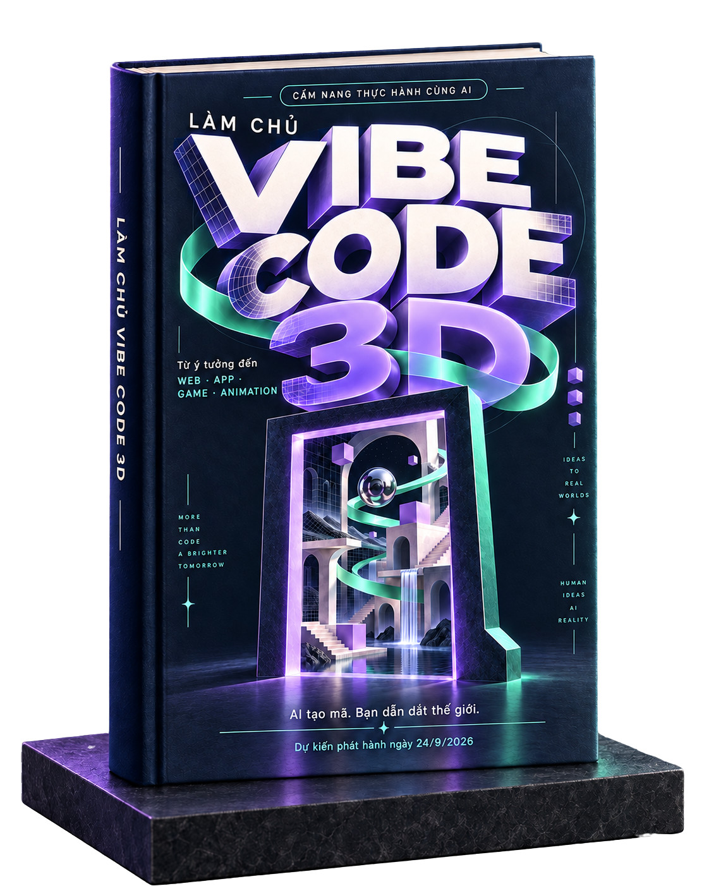
Chương 1 — Tư duy Vibe Code 3D: bạn định hướng, AI thực hiện
Bạn có thể mô tả một trang web bằng vài câu và nhờ AI viết mã. Với 3D, cách bắt đầu cũng như vậy, nhưng phần cần kiểm tra nhiều hơn: hình có đúng không, nhìn từ góc khác có còn đúng không, mô hình có quá nặng không, và nó có thực sự chuyển động được không? Chương này giúp bạn hiểu vai trò của mình trước khi cài công cụ hay học thuật ngữ.
Sau chương này, bạn có thể: chọn một ý tưởng 3D vừa sức; giao một nhiệm vụ rõ ràng cho AI; nhìn kết quả để quyết định bước tiếp theo; phân biệt ảnh nhân vật, mô hình 3D và nhân vật có hoạt ảnh.
1.1. Vibe coding là gì?
Vibe coding là cách làm sản phẩm bằng ngôn ngữ tự nhiên: bạn nói mục tiêu và yêu cầu, một agent lập trình tạo file, chạy thử và sửa lỗi cùng bạn. Agent là trợ lý có thể làm việc với dự án, không chỉ trả lời trong ô chat. Bạn không cần tự gõ từng dòng mã để làm bản đầu tiên, nhưng vẫn là người quyết định sản phẩm cần làm gì và khi nào đã đạt.
Hãy nghĩ đến việc làm một căn phòng trưng bày. Bạn có thể nhờ một đội thi công dựng phòng, đặt đèn và treo sản phẩm. Nếu bạn chỉ nói “làm thật đẹp”, mỗi người có thể hình dung một kiểu. Nếu bạn đưa ảnh mẫu, kích thước, nơi đặt sản phẩm và cách khách đi xem, đội thi công sẽ có cơ sở để làm đúng hơn. Agent lập trình cũng cần những chỉ dẫn như vậy.
Với một dự án 3D, câu “Tạo một game thật đẹp” chưa cho AI biết nhân vật là ai, người chơi làm gì, game chạy ở đâu và thế nào là xong. Một yêu cầu dễ thực hiện hơn là:
Tạo một cảnh 3D nhỏ chạy trên trình duyệt. Nhân vật đứng trên một hòn đảo, người chơi dùng phím hoặc nút trên điện thoại để đi đến một viên pha lê. Chạm vào pha lê thì hiện “Đã tìm thấy”. Trước tiên chỉ làm một màn chơi; cho tôi xem bản chạy được rồi mới thêm hiệu ứng.
Yêu cầu thứ hai có đối tượng, hành động, môi trường và điểm dừng. Nhờ đó, bạn có thể kiểm tra kết quả thay vì chỉ cảm thấy “có vẻ chưa đúng”.
Điểm cần nhớ: AI tạo bản đầu tiên rất nhanh. “Đã hiện trên màn hình” chưa đồng nghĩa “đã hoàn thiện”. Bạn cần xem, thử và mô tả điều cần sửa.
1.2. Thế giới 3D khác một trang web thông thường ở đâu?
Một trang thông tin thường có chữ, ảnh, nút và các khối nội dung. Cảnh 3D còn có chiều sâu. Vật thể có mặt trước, sau, trái, phải; ánh sáng và góc nhìn có thể làm cùng một vật trông rất khác.
Hãy hình dung một sân khấu:
SÂN KHẤU 3D (scene)
├─ Đạo cụ, nhân vật → mô hình (model)
├─ Hình dạng đạo cụ → hình học (geometry/mesh)
├─ Màu và bề mặt → vật liệu, ảnh bề mặt (material/texture)
├─ Đèn → ánh sáng (light)
└─ Máy quay → camera
Trình duyệt vẽ cảnh → bạn nhìn và thử → nói điều cần sửa → AI chỉnh lại
Bạn chưa cần học hết tên gọi ở đây. Chỉ cần nhớ: khi một nhân vật nhìn “sai”, nguyên nhân có thể nằm ở mô hình, ảnh bề mặt, ánh sáng hoặc camera. Ví dụ, giày trông méo có thể do phần hình của giày thật sự sai; đổi camera đẹp hơn không sửa được lỗi đó. Chương 2 sẽ giải thích từng thuật ngữ bằng hình và ví dụ.
1.3. Bắt đầu từ ứng dụng nào?
3D có ích khi người xem cần quan sát nhiều góc hoặc tương tác với đối tượng. Bạn không cần bắt đầu bằng một game lớn.
| Ứng dụng | Người xem làm gì? | Bản đầu tiên vừa sức |
|---|---|---|
| Landing page sản phẩm 3D | Xoay để xem hình dạng, màu hoặc chi tiết | Một mô hình, một thao tác xoay, phần mô tả dễ đọc |
| Mô hình trực quan trên website | Khám phá không gian, chọn một vị trí để xem thông tin | Một cảnh, vài điểm bấm có chú thích |
| Game 3D đơn giản | Di chuyển, tìm hoặc nhặt một vật | Một nhân vật, một màn chơi, một mục tiêu |
Nếu người xem chỉ cần thấy một khoảnh khắc đẹp, ảnh hoặc video có thể đã đủ. Chọn 3D khi việc xoay, đi lại hoặc chạm vào mô hình giúp họ hiểu thêm điều mà ảnh tĩnh không thể hiện được.
Ví dụ xuyên suốt mười chương đầu là game Mira: từ ảnh nhân vật, mô hình Tripo, bản game đã chơi được tới việc gắn xương và tạo chuyển động. Chương 11 mở một dự án độc lập để áp dụng cùng cách làm cho landing page 3D.
1.4. PROMPT là chưa đủ: bạn cần biết mình đang duyệt điều gì
Một prompt hay không bù được ảnh đầu vào sai hoặc một mô hình thiếu bộ phận. Bạn cũng không cần trở thành lập trình viên hay họa sĩ 3D. Điều cần làm là đặt tiêu chí quan sát được.
Trong một dự án nhỏ, phần việc có thể chia như sau:
| Bạn quyết định | AI hỗ trợ |
|---|---|
| Ai sẽ dùng sản phẩm và họ làm việc gì | Đề xuất cấu trúc và tạo bản đầu tiên |
| Ảnh, phong cách và chi tiết nào phải giữ | Tạo ảnh tham chiếu hoặc đưa mô hình vào cảnh |
| Kết quả nào đạt, chi tiết nào sai | Tìm nguyên nhân và sửa phần được chỉ rõ |
| Khi nào nên dừng để kiểm tra | Chạy thử, chụp kết quả, báo điều đã làm |
Quy trình ngắn nhất là:
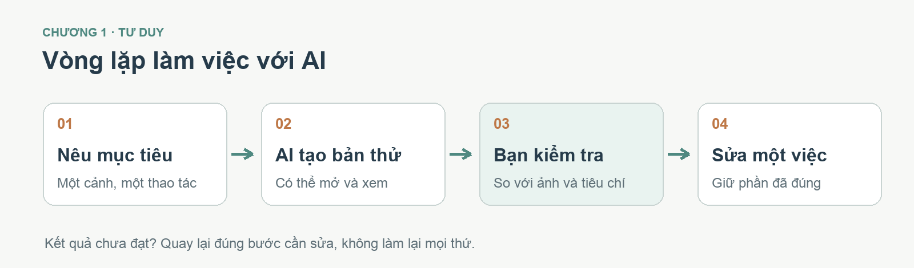
Nêu một việc rõ ràng
↓
AI tạo một kết quả có thể xem
↓
Bạn so với mục tiêu và ảnh tham chiếu
↓
Chỉ sửa một nhóm vấn đề
↺ Lặp lại đến khi đạt
Ví dụ, nếu mặt nhân vật đúng nhưng giày sai, hãy nói “giữ mặt, tóc và áo; chỉ kiểm tra hình dáng hai chiếc giày” thay vì “làm lại nhân vật cho đẹp”. Câu thứ hai có thể khiến những phần đang đúng cũng thay đổi.
1.5. Năm bước tạo một nhân vật anime cho game 3D
Chúng ta dùng Mira, một nhân vật thám hiểm tai thỏ theo phong cách anime dễ thương. Trang phục gồm áo khoác rộng, khăn quàng, quần dài và giày bốt. Bản game đầu tiên đã được tạo từ một lệnh lớn. Ở phần thực hành, ta tách từng đầu vào để thấy chúng làm kết quả thay đổi ra sao và biết cách phát triển game tiếp.
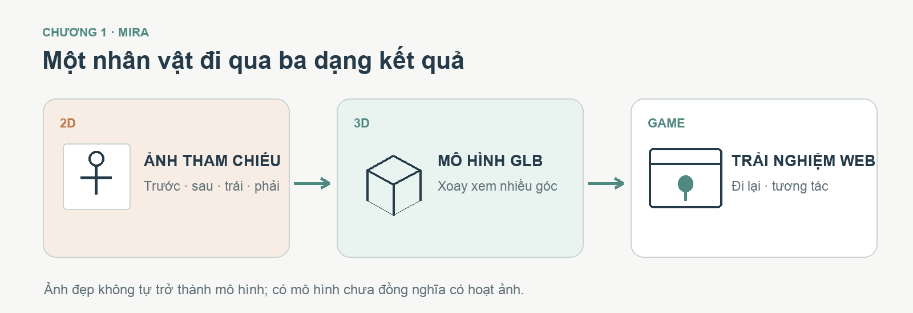
Bước 1 — Chốt thiết kế từ mặt trước bằng ChatGPT.
Mục tiêu: tạo một ảnh nhân vật dễ nhận diện và có trang phục rõ ràng.
Prompt có thể dùng ngay:
Thiết kế một nữ thám hiểm phong cách anime/chibi cho game hành động nhẹ nhàng. Nhân vật có tóc nâu ngắn, mắt xanh, tai thỏ cách điệu, áo khoác xanh ngọc rộng, khăn màu san hô, quần dài, găng tay và giày bốt. Trang phục kín đáo, không gợi cảm. Vẽ toàn thân nhìn chính diện, đứng cân bằng, hai tay tách nhẹ khỏi thân, nền trắng. Giữ các chi tiết đủ đơn giản để có thể dựng thành mô hình 3D.
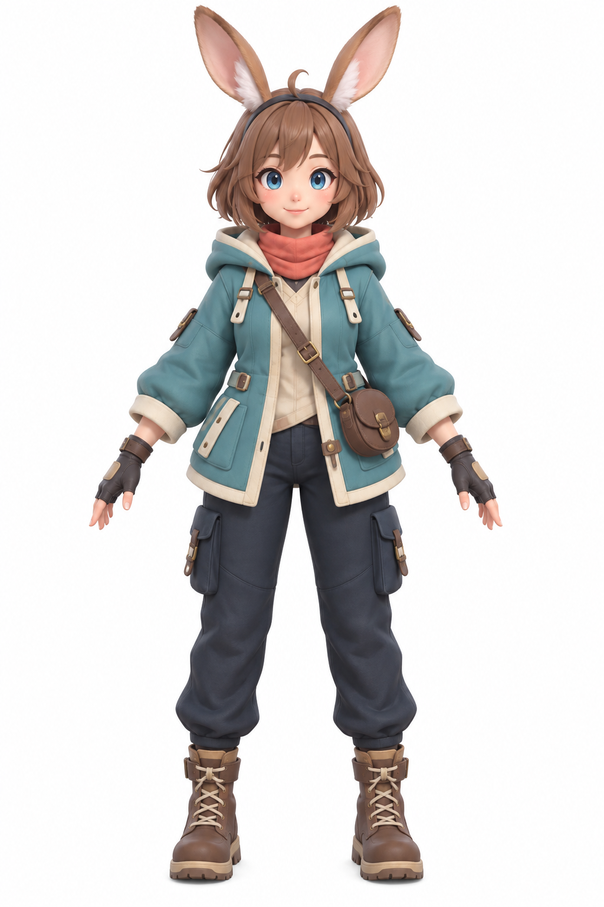
Đây là ảnh 2D, chưa phải mô hình 3D.
Cách kiểm tra: nhìn rõ cả hai giày, hai tay, tai thỏ, màu áo và túi đeo; không có phần nào bị cắt khỏi khung. Nếu ảnh thiếu chân hoặc bàn tay, sửa ảnh trước khi đi tiếp.
Bước 2 — Tạo mặt sau của cùng nhân vật.
Mục tiêu: để công cụ 3D không phải tự đoán toàn bộ phía sau.
Prompt có thể dùng ngay:
Dựa trên ảnh chính diện tôi gửi, hãy tạo mặt sau của đúng nhân vật này. Giữ chiều cao, tỷ lệ đầu và tai, tóc, áo khoác, túi, quần và giày nhất quán. Không thêm phụ kiện mới. Toàn thân, tư thế trung tính, nền trắng.
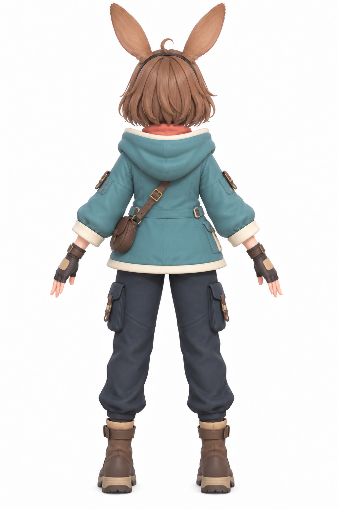
Cách kiểm tra: đặt hai ảnh cạnh nhau; đối chiếu chiều dài áo, màu khăn, vị trí dây túi và kiểu giày. AI có thể vẽ thêm một chi tiết hợp lý nhưng không có trong ảnh gốc; “trông hợp lý” vẫn chưa chắc là “cùng nhân vật”.
Bước 3 — Hoàn thiện góc trái và phải.
Mục tiêu: có một bộ ảnh nhiều góc để dựng 3D.
Prompt có thể dùng ngay:
Từ ảnh trước và sau đã duyệt, tạo thêm góc trái và góc phải của cùng nhân vật. Giữ tai, tóc, túi đeo, viền áo, chiều dài quần và giày nhất quán. Mỗi ảnh chỉ có một nhân vật toàn thân, đứng thẳng, nền trắng.
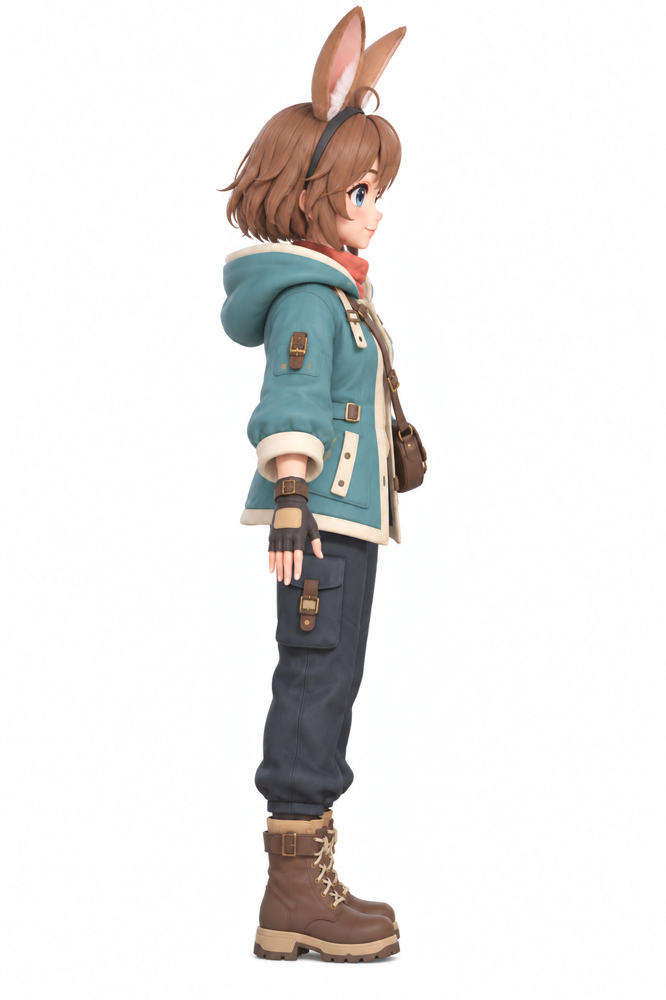
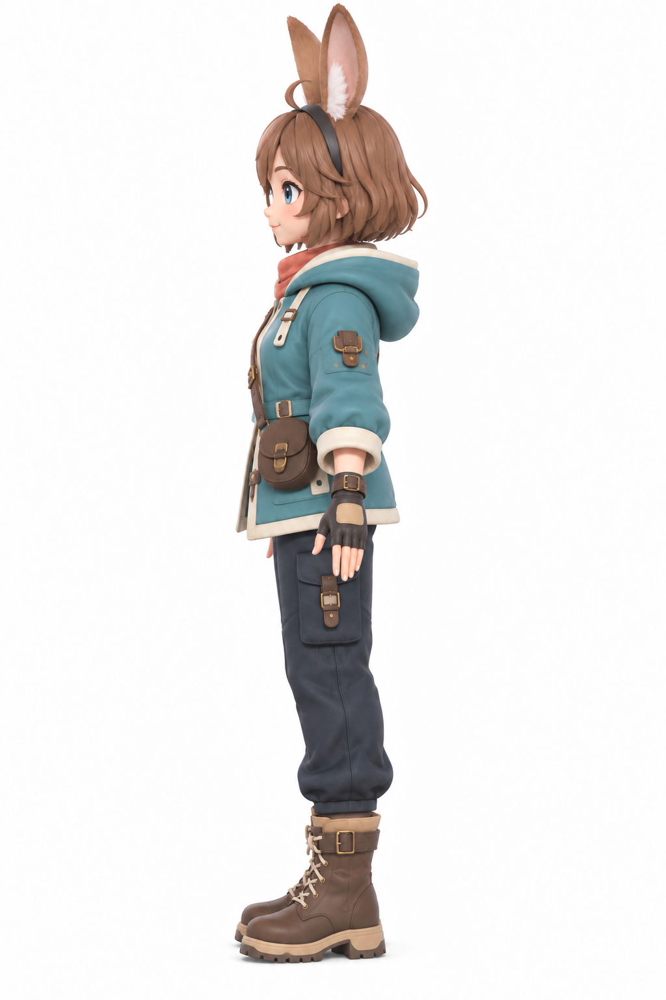
Cách kiểm tra: nhìn dải màu của áo, túi đeo và giày qua cả bốn ảnh. Nếu ảnh trái có kiểu bốt khác ảnh phải, hãy sửa bộ ảnh trước khi tạo 3D. Bốn ảnh không nhất quán có thể khiến công cụ dựng ra các chi tiết lạ.
Bước 4 — Dựng và duyệt mô hình trong Tripo.
Mục tiêu: chuyển bốn ảnh đã chọn thành một mô hình 3D có thể dùng trên web. Trong bản được tác giả chọn cho game, ảnh được nạp vào Tripo Studio, chế độ Multi-view to 3D với HD Model H3.1. Mô hình trong ảnh chụp có topology Triangle. Đây là một lần dựng khác với bản thử P1 trước đó; không gộp hai kết quả thành một.
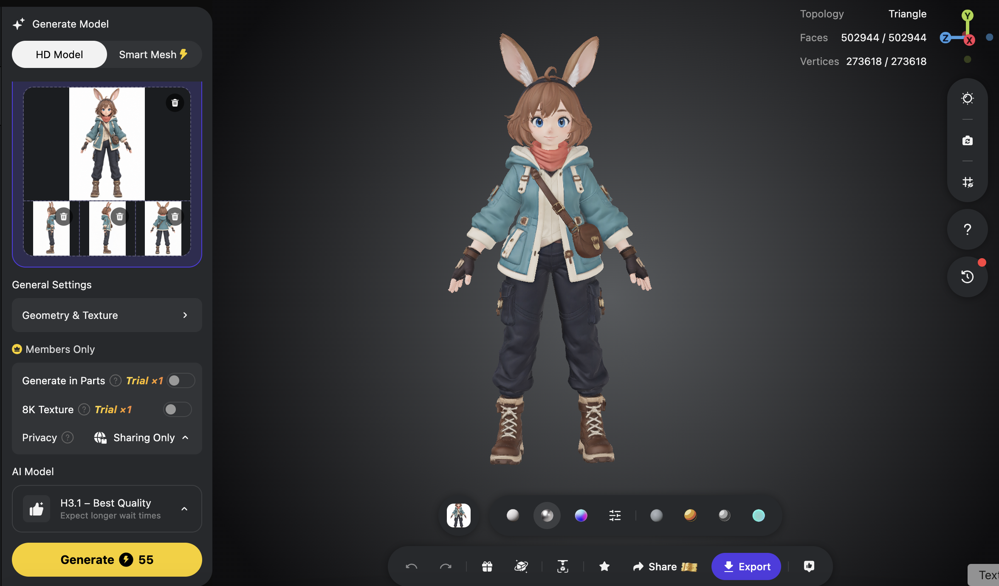
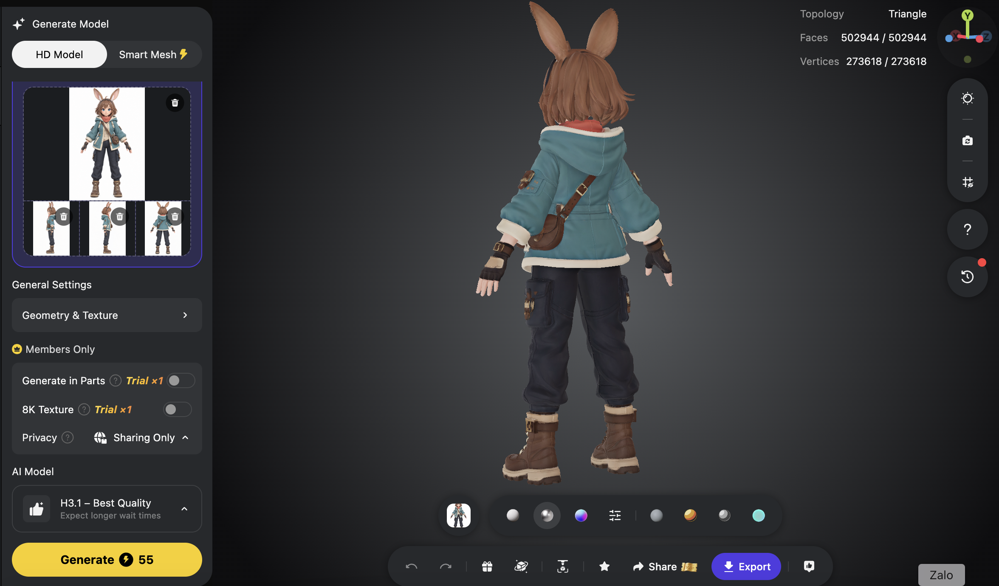
Kết quả thực tế ở bản đầu: mô hình giữ được các đặc điểm nhận diện chính. GLB đầu tiên đưa vào game có texture nhưng chưa có rig hoặc clip hoạt ảnh. Sau vòng thử này, tác giả đã làm Retopo và gắn xương cho Mira; Chương 7 theo sát bước nâng cấp đó. Giày đã rõ hơn bản thử cũ, vẫn cần xem cận cảnh hai bên trước khi coi asset là bản cuối.
Cách kiểm tra: xoay mô hình để nhìn cả trước, sau và hai bên; phóng to mặt, tay và giày; xem các bộ phận có bị dính hoặc méo không. Nếu một chi tiết sai, ghi lại đúng chi tiết đó. Đừng vội dùng mô hình trong game chỉ vì preview mặt trước trông đẹp.
Lưu ý về GLB: File Mira hiện có hình và ảnh bề mặt, nhưng không có bộ xương điều khiển (rig) hay hoạt ảnh chạy/nhảy. GLB là một gói mô hình; nội dung bên trong mỗi file có thể khác nhau. Có file GLB không có nghĩa nhân vật đã chạy được.
Bước 5 — Đưa nhân vật vào một game web nhỏ.
Tác giả đã dùng một prompt rộng hơn với Claude Opus 5.5 để tạo Mira · Đêm Linh Quang, một game Three.js đã chơi được trên desktop và mobile. Prompt khởi đầu là:
Tôi có file GLB của nhân vật Mira và muốn đưa vào một màn chơi 3D nhỏ trên web. Trước tiên hãy kiểm tra file có những phần nào, có rig hoặc hoạt ảnh không. Sau đó đặt nhân vật vào một cảnh game đồ họa đẹp, sử dụng Three.js và các công cụ cần thiết. Cho người chơi di chuyển bằng bàn phím hoặc nút chạm và nhặt một vật phát sáng. Có thể thêm vài loại yêu quái xuất hiện theo mức độ tăng dần và các chiêu thức để nhân vật chiến đấu. Tạo thư mục dự án; sau khi xong, mở localhost để tôi chơi thử.
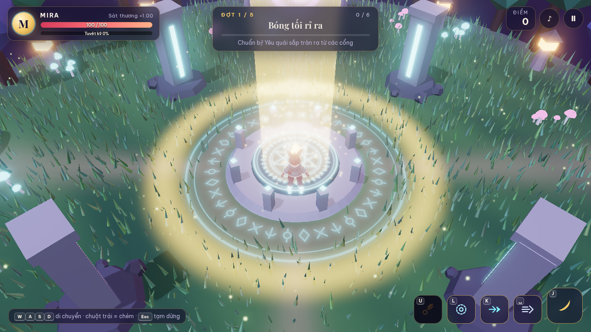
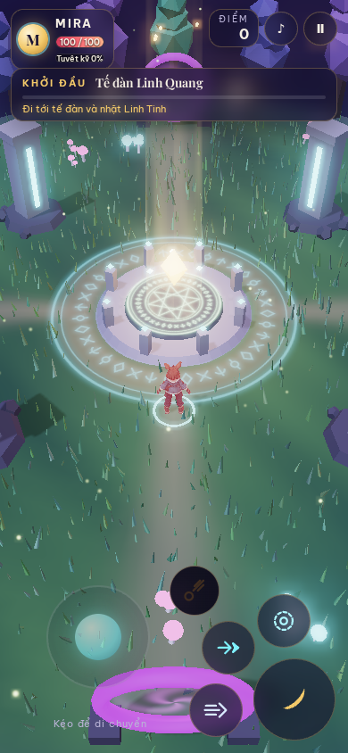
Điểm cần phân biệt: Prompt này tạo ra phiên bản game đầu tiên có nhiều hệ thống nhưng chân tay Mira chưa cử động theo khớp. GLB đời đầu không có xương; mã khi ấy chỉ nhún, nghiêng hoặc xoay cả nhân vật. Repo được phát triển tiếp đã có Mira 65 xương và chuyển động dựng bằng mã; Chương 7 giải thích vì sao GIF preview trên Tripo chưa tự biến thành clip trong GLB xuất ra.
Cách tự kiểm: nhân vật hiện đủ người, không chìm xuống nền; phím/nút di chuyển hoạt động; chạm vật thì có phản hồi. Chương 7 hướng dẫn nâng cấp chuyển động, Chương 10 hướng dẫn kiểm lại toàn bộ vòng chơi.
Bài học rút ra từ năm bước
Ở bước 1–3, ChatGPT giúp chuẩn bị ảnh đầu vào. Bước 4, Tripo tạo mô hình 3D. Bước 5, agent lập trình dùng mô hình đó trong một trải nghiệm web. Mỗi công cụ giải quyết một việc khác nhau. Khi giày của bản 3D chưa đạt, người làm dự án phải nhận ra và quyết định sửa đầu vào, chỉnh asset hay chấp nhận giới hạn ở bản thử. Đó là tư duy quan trọng hơn một prompt dài.
Bài tập 10 phút: chọn dự án đầu tiên
Hãy chọn một trong ba hướng: mô hình sản phẩm xoay được, một góc tham quan có điểm bấm, hoặc game nhặt một vật. Viết một câu mô tả kết quả và ba dấu hiệu để biết bản đầu tiên đã đạt.
Bạn có thể đưa prompt này cho ChatGPT/Codex hoặc Claude:
Tôi là người mới và muốn làm một bản mẫu 3D chạy trên trình duyệt trong một ngày. Ý tưởng của tôi là: [viết một câu]. Hãy giúp tôi thu hẹp thành phiên bản nhỏ nhất có thể xem và thử. Đề xuất tối đa ba tiêu chí “đạt”, những ảnh hoặc mô hình cần chuẩn bị, và thứ tự ba việc đầu tiên. Giải thích bằng ngôn ngữ dễ hiểu; chưa viết mã cho đến khi tôi chọn phương án.
Tự kiểm tra: Sau khi AI trả lời, bạn có hình dung được mình sẽ nhìn thấy gì trên màn hình ở lần chạy đầu tiên không? Nếu chưa, hãy yêu cầu mô tả lại bằng một cảnh và một thao tác cụ thể.
Trước khi sang chương 2
- [ ] Tôi phân biệt được ảnh 2D, mô hình GLB và nhân vật có hoạt ảnh.
- [ ] Tôi chọn được một ứng dụng 3D nhỏ thay vì một dự án quá rộng.
- [ ] Tôi biết kiểm tra kết quả thật và nêu một chi tiết sai cụ thể.
- [ ] Tôi có một câu mô tả dự án cùng ba tiêu chí “đạt”.
Chương 2 sẽ giải thích những từ vừa xuất hiện — scene, camera, model, GLB, rig, Three.js — và cách chuẩn bị môi trường tối thiểu để bắt đầu.
Chương 2 — Đọc một game 3D bằng ngôn ngữ dễ hiểu
Chương 1 đã đưa Mira từ ảnh 2D sang mô hình rồi vào game. Bạn chỉ cần vài từ để nói chính xác phần nào cần sửa. Hãy nhìn game như một sân khấu có diễn viên, phông cảnh, máy quay và luật chơi.
Sau chương này, bạn làm được: gọi tên sáu thành phần quan trọng và biết file nào cần đưa cho agent khi muốn nâng cấp Mira.
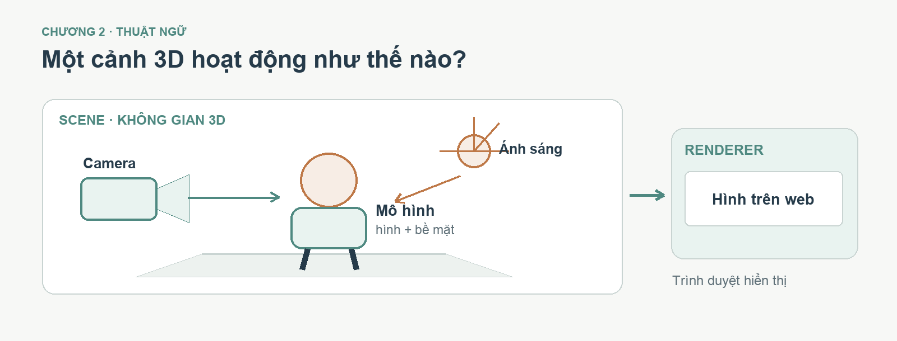
2.1. Sáu từ thật sự cần cho case Mira
| Từ | Hiểu bằng game Mira | Câu hỏi khi sửa |
|---|---|---|
| GLB / asset | File nhân vật 3D được đưa vào game | Có tải đúng bản Mira đã duyệt không? |
| Scene / world | Đảo bay, cỏ, cổng và tế đàn | Mục tiêu có dễ nhìn không? |
| Camera | “Máy quay” theo Mira | Có thấy nhân vật, quái và đường đi không? |
| Texture / material | Màu áo, bốt, độ bóng bề mặt | Sai màu ở file hay do ánh sáng game? |
| Rig / clip | Xương và động tác đứng, chạy, đánh | GLB có thật sự chứa chúng không? |
| Three.js | Công cụ vẽ cảnh và xử lý tương tác trên web | Agent đã mở bản chơi trên localhost chưa? |
Localhost là địa chỉ xem bản đang chạy trên máy làm việc, giống bản nháp chưa đưa lên mạng. Repo là thư mục dự án cùng lịch sử thay đổi. Token là đơn vị AI dùng khi đọc và trả lời; đưa cả lịch sử dài vào một lỗi nhỏ thường lãng phí hơn gửi ảnh lỗi và file liên quan.
Ở phiên bản đầu, GLB Mira có hình và màu nhưng không có rig hoặc clip; Three.js chỉ đổi vị trí cả model. Ở repo mới nhất, Mira có 65 xương nên chân có thể bước và tay có thể ra chiêu. File Tripo xuất ra vẫn không mang theo clip hoạt ảnh, vì vậy game tạo các động tác trên bộ xương bằng mã. Hai mốc này giúp bạn thấy “đi được” và “chân bước thật” là hai việc khác nhau.
2.2. Công cụ nào đã làm việc gì?
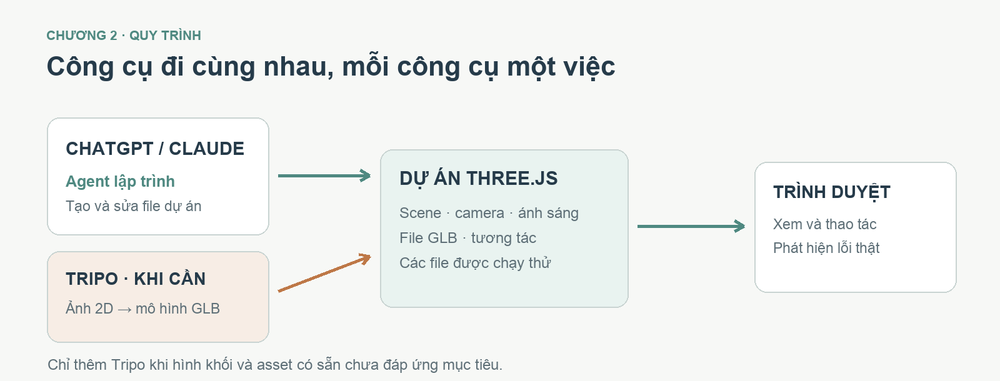
| Công cụ | Việc trong case này |
|---|---|
| ChatGPT | Tạo bộ ảnh Mira trước/sau/trái/phải và ảnh concept phát triển |
| Tripo Studio | Tạo model 3D từ ảnh, xoay preview, xuất GLB; có thể thử Auto Rig ở bước sau |
| Claude hoặc Codex | Đọc file, tạo/sửa repo game, chạy localhost và kiểm kết quả |
| Three.js | Hiển thị Mira, bối cảnh, quái, ánh sáng và hiệu ứng trong trình duyệt |
Game Mira mà tác giả cung cấp được tạo sau khi ông điều chỉnh prompt và chạy trên Claude Opus 5.5. Đây là một quan sát của case, không phải phép thử chứng minh model nào luôn tốt hơn. Ảnh đầu vào, file GLB, yêu cầu và cách duyệt đều ảnh hưởng kết quả.
2.3. Bắt đầu từ bản đang chạy
Bạn không cần tạo một thư mục game mới để học chương này. Hãy mở repo Mira đã có, nhờ agent đọc README và khởi chạy bản hiện tại. Đừng đưa mật khẩu hoặc khóa API vào prompt.
Prompt thực hành:
Đây là thư mục game Mira đang chạy. Hãy đọc README và kiểm cấu trúc dự án, nhưng chưa sửa file. Chạy game trên localhost và cho tôi biết: file GLB nào đang dùng, phần nào tạo nhân vật, quái, chiêu thức và bối cảnh, cách mở bản desktop/mobile. Giải thích bằng lời đơn giản, mỗi phần một câu. Nếu không chạy được, báo đúng lỗi trước khi đề xuất sửa.
Cách thử: mở trang, nhìn thấy Mira và tế đàn, dùng bàn phím hoặc nút chạm di chuyển. Nếu trang trắng: đưa thông báo lỗi cho agent; yêu cầu kiểm asset và đường dẫn trước khi đổi thiết kế.
2.4. Giữ một tờ ghi chú dự án
Nhờ agent tạo một file ngắn ghi: bản đang chạy, asset đang dùng, điều đã kiểm, một việc cần làm tiếp. Ví dụ: “Mira đã chơi được trên desktop/mobile; GLB chưa rig; việc tiếp theo là thử idle/run/attack; giữ nguyên game hiện tại.” Tờ ghi chú này giúp phiên làm việc sau không bắt đầu lại từ số không.
Prompt tiếp tục: “Hãy đọc ghi chú dự án và bản game hiện tại. Nêu một việc nhỏ nên làm tiếp, file nào có thể phải thay, và cách tôi kiểm kết quả. Chưa sửa cho đến khi đã xác nhận phạm vi.”
Trước khi sang chương 3
- [ ] Tôi phân biệt được asset, bối cảnh, camera và chuyển động.
- [ ] Tôi biết GLB có hình nhưng chưa chắc có xương.
- [ ] Tôi mở được bản game hiện tại trước khi giao nâng cấp.
Chương 3 sẽ dùng chính game Mira để chia một yêu cầu lớn thành các nhiệm vụ nhỏ.
Chương 3 — Từ một prompt đến kế hoạch phát triển game Mira
Ở Chương 1, một prompt đã giúp tạo Mira · Đêm Linh Quang: nhân vật trên đảo bay, nhặt Linh Tinh, đánh các đợt quái. Game chạy được. Chương này chỉ ra cách tách kết quả thành những việc nhỏ để nâng cấp mà không phá bản đang chơi.
Sau chương này, bạn làm được: kể lại vòng chơi bằng bốn cảnh, giải thích một thao tác được game xử lý thế nào, chọn một phần để cải tiến và giao việc cho ChatGPT/Codex hoặc Claude bằng câu lệnh có điểm dừng.
3.1. Một prompt tạo ra game, nhưng game gồm nhiều phần
Hãy nhìn ảnh game và hỏi: “Nếu thay đúng một thứ, tôi muốn thay gì trước?” Sáu phần dễ nhận ra là nhân vật, chuyển động, quái, chiêu thức, bối cảnh và điều khiển. Mira hiện đi được nhưng hai chân chưa bước riêng; đó là nhiệm vụ về nhân vật và chuyển động, không phải nhiệm vụ làm lại cả đảo bay.
| Phần đang có | Bản hiện tại | Một nâng cấp có thể kiểm |
|---|---|---|
| Mira | Bản đầu có hình đẹp nhưng chưa có xương; bản mới đã gắn 65 xương | Kiểm bước chân và chuyển động trong Xưởng của game; chỉ gọi là clip Tripo nếu file thật có clip |
| Quái | Hình khối dựng bằng Three.js | Dễ nhận ra loại yếu, loại bay và trùm |
| Chiêu thức | Chém, bắn, vòng sáng, lướt, tuyệt kỹ | Mỗi chiêu có hình ảnh và phản hồi riêng |
| Bối cảnh | Đảo bay, cổng, cỏ và tế đàn | Đường đi rõ; Mira không bị cảnh che khuất |
| Mobile | Cần ảo và nút chạm | Chơi được trên máy thật, nút không che nhân vật |
Trước khi thêm truyện mới, hãy xem một vòng chơi đã có qua năm ảnh thật. Người chơi nhìn hướng dẫn, nhặt Linh Tinh, đối mặt các đợt quái, đánh trùm và tới màn kết quả. Chuỗi này là khung xương để đặt thêm cốt truyện; thêm một cảnh mới phải giúp người chơi hiểu hoặc thực hiện một bước trong chuỗi.

3.2. Từ ảnh game thành câu chuyện bốn cảnh
Game đã có vòng chơi: tìm Linh Tinh, đối mặt các đợt quái và đánh trùm. Để phát triển bối cảnh truyện, trước tiên hãy kể lại điều người chơi tự nhìn thấy và làm được, rồi mới thêm chi tiết mới. Một hướng dễ hiểu là: Linh Tinh thức tỉnh tế đàn; bóng tối từ cổng tràn ra; Mira dùng ánh sáng mở đường; khi vượt qua trùm, cổng được thanh lọc. Đây là đề xuất kể chuyện cho phiên bản tiếp theo, không phải lời thoại hay nhiệm vụ đã có trong game.
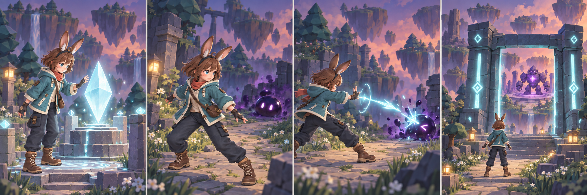
Mỗi cảnh chỉ cần trả lời hai câu: Mira muốn gì? và người chơi phải làm gì để tiến tiếp? Nếu một chi tiết truyện không thay đổi mục tiêu, đường đi hoặc cảm giác khi chơi, hãy để sau. Chẳng hạn, cổng phát sáng khi nhặt đủ Linh Tinh vừa kể được chuyện, vừa cho người chơi biết phải đi đâu.
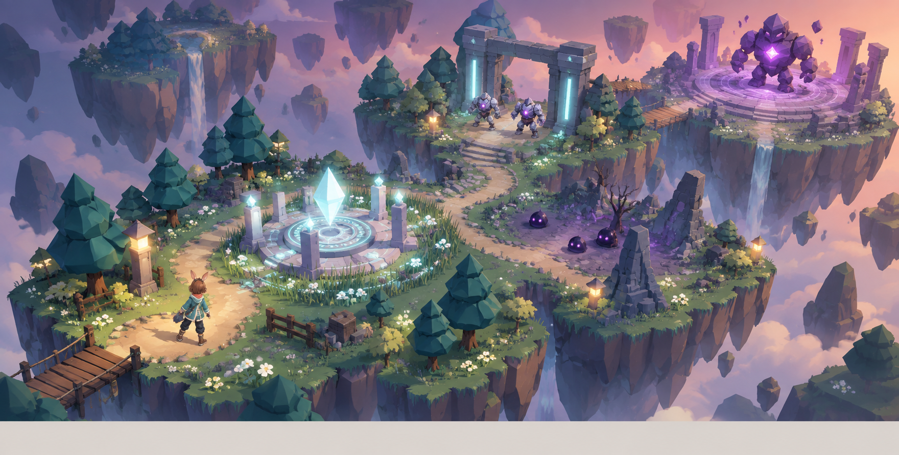
Bài tập 5 phút: dùng ngón tay đi theo đường từ Mira tới cổng trong Hình 3.4. Nếu phải đoán lối đi, hãy yêu cầu làm rõ đường hoặc tín hiệu ánh sáng trong ảnh định hướng trước khi giao agent dựng cảnh 3D.
3.3. Một thao tác trong game hoạt động thế nào?
Khi Mira chạm Linh Tinh, có ba lớp liên tiếp: người chơi di chuyển và chạm vật; game kiểm vật đã được nhặt và đợt quái cần bắt đầu; màn hình cho thấy ánh sáng, thông tin mới và quái xuất hiện. Người mới không cần đọc hết mã để hiểu mối liên hệ này.
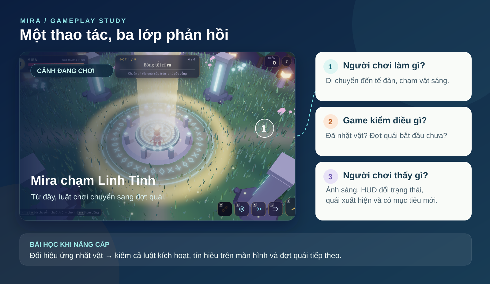
Thử trực tiếp: mở game, tiến tới tế đàn và quan sát trước/sau khi nhặt. Ghi một câu về điều bạn bấm, một câu về điều màn hình thay đổi và một câu về điều bạn mong xảy ra tiếp. Ba câu ấy là nền cho prompt sửa tính năng.
3.4. Câu lệnh đầu tiên và câu lệnh tiếp theo khác nhau
Prompt đầu tiên cần mở được dự án và tạo vòng chơi. Prompt tiếp theo cần giữ phần đã đạt rồi sửa đúng một phần.
Game Mira hiện đã chạy. Hãy đọc file GLB đang dùng và phần điều khiển nhân vật. Tôi muốn chân tay chuyển động thật khi Mira đứng, đi và chạy. Trước khi sửa, báo file có xương và clip hay không; nếu không có, đề xuất bước tạo asset phù hợp. Giữ nguyên ngoại hình, bối cảnh, quái và luật chơi. Chỉ sửa game sau khi đã có file hoạt ảnh kiểm được. Mở localhost và cho tôi xem Mira đứng, chạy, dừng theo cùng một góc camera.
Mục tiêu: thay hoạt ảnh nhân vật. Cách thử: đi thẳng, đổi hướng, dừng, nhìn cận hai chân và hai bốt. Nếu lỗi: quay về bản GLB và game trước khi sửa; ghi lỗi cụ thể như “chân xuyên nền”.
3.5. Mẫu giao việc bốn dòng
Bạn không phải viết một mega prompt cho mọi lần chỉnh. Hãy nói rõ hiện có gì, muốn thay gì, phải giữ gì và đạt khi nào.
Ví dụ với quái: “Hiện có ba loại quái bằng hình khối. Muốn thay riêng Slime Bóng Tối bằng thiết kế mới; giữ tốc độ, máu và cách đuổi hiện tại. Đạt khi tôi nhận ra nó từ xa, đòn đánh vẫn báo trước và game còn chạy trên mobile.” Câu này cho agent đủ tự do để làm hình nhưng không được tự ý đổi luật chơi.
3.6. Chia phiên làm việc theo kết quả xem được
Một trình tự cho bản nâng cấp Mira là: kiểm GLB → duyệt dáng đứng/chạy → ghép hoạt ảnh → đổi một quái → nâng cấp một chiêu → thử desktop/mobile. Mỗi bước phải có ảnh hoặc bản chạy để duyệt. Nếu dáng chạy chưa ổn, đừng chuyển sang làm phép thuật.
Bài tập 10 phút: chọn đúng một hàng trong bảng mục 3.1. Viết bốn câu “Hiện có / Muốn thay / Phải giữ / Đạt khi”. Mở game, chụp trạng thái hiện tại và gửi ảnh đó cho agent. Đây là điểm gốc để so trước và sau.
Trước khi sang chương 4
- [ ] Tôi gọi tên được các phần của game Mira bằng lời thường.
- [ ] Tôi phân biệt ảnh concept kể chuyện với ảnh game đang chạy.
- [ ] Tôi mô tả được thao tác, luật kiểm và phản hồi của việc nhặt Linh Tinh.
- [ ] Tôi chọn một nâng cấp, không giao lại cả game.
- [ ] Prompt có điều phải giữ và dấu hiệu “đạt” nhìn thấy được.
Chương 4 dùng ảnh game thật để chỉ cách đánh giá kết quả bằng mắt và bằng thao tác.
Chương 4 — Xem game bằng mắt, thử game bằng tay
Khi AI báo “đã hoàn thành”, đó là lúc bạn bắt đầu duyệt. Game Mira có thể trông đẹp trong một ảnh nhưng vẫn sai khi nhân vật chạy, quái đánh hoặc màn hình thu nhỏ.
Sau chương này, bạn làm được: so asset với ảnh gốc, phân biệt ảnh đẹp với tính năng chạy thật, báo một lỗi đủ cụ thể để agent sửa.
4.1. Duyệt nhân vật ở hai nơi
Trước tiên, xem Mira trong Tripo Studio từ trước và sau. Ảnh chính diện cho thấy mắt, áo, dây túi và bốt. Ảnh phía sau cho thấy tóc, mũ áo và vị trí túi. Sau đó mới xem Mira trong game: dưới ánh sáng, camera và tỷ lệ mới, màu và hình có còn đúng không?
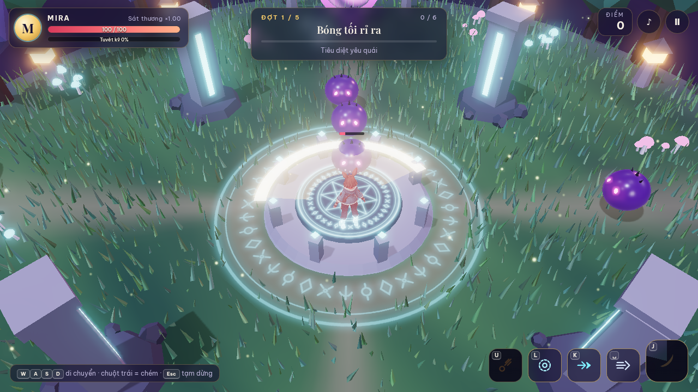
4.2. Năm câu hỏi đủ dùng cho người mới
- Đúng người chưa? Tóc, tai, áo và túi có còn giống ảnh nhân vật đã duyệt?
- Thấy rõ việc cần làm chưa? Người mới có nhận ra tế đàn, Linh Tinh và quái không?
- Bấm có phản hồi chưa? Đi, nhặt vật, ra chiêu có dấu hiệu nhìn hoặc nghe thấy?
- Có bất công không? Đòn của quái có báo trước để người chơi tránh?
- Điện thoại có chơi được không? Nút chạm có đủ lớn, không che mục tiêu?
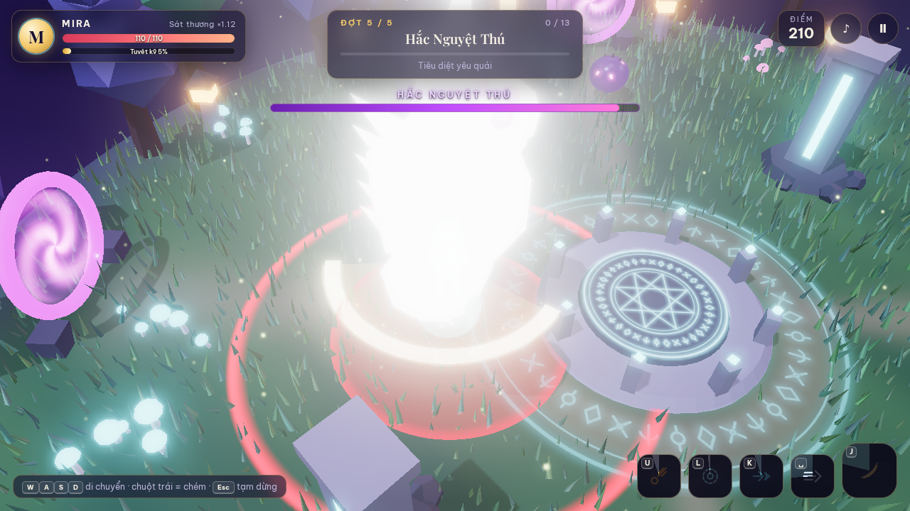
4.3. Ảnh chụp là bằng chứng của một khoảnh khắc
Ảnh trùm chứng minh game có hình vòng cảnh báo. Nó chưa chứng minh vòng cảnh báo xuất hiện đúng lúc hoặc phím lướt tránh được đòn. Muốn kiểm, hãy chơi: đứng gần trùm, chờ vòng đỏ, lướt khỏi vòng, thử lại hai lần. Video ngắn hoặc thao tác trực tiếp đáng tin hơn ảnh tĩnh cho chuyển động.
4.4. Gửi nhận xét sửa được
Nhận xét “game chưa mượt” quá rộng. Ví dụ giả định, nếu bạn gặp tình huống: “Trên điện thoại dọc, tôi chạm nút lướt khi vòng đỏ xuất hiện, nhưng Mira vẫn bị trúng”, hãy yêu cầu kiểm thời điểm miễn sát thương và phản hồi hình ảnh, đồng thời giữ nguyên tốc độ quái. Câu này có thiết bị, thao tác, hiện tượng và giới hạn sửa.
Prompt dùng ngay:
Đây là ảnh hoặc video trạng thái game Mira. Hãy đối chiếu với mục tiêu tôi ghi bên dưới. Chỉ ra tối đa ba vấn đề có thể thấy hoặc tái hiện. Với mỗi vấn đề, nói cách thử để xác nhận trước khi sửa. Chưa thay mã cho đến khi đã phân biệt lỗi hình ảnh, lỗi điều khiển và lỗi luật chơi.
Bài tập: xem một ảnh desktop và một ảnh mobile. Viết một điều đã đạt, một điều chưa chắc, một phép thử cần làm. Đừng gọi “đạt” cho điều mà ảnh không chứng minh được.
Trước khi sang chương 5
- [ ] Tôi kiểm asset ở Tripo và trong game ở hai bước riêng.
- [ ] Tôi thử thao tác, không chỉ nhìn ảnh.
- [ ] Tôi báo lỗi bằng thao tác và kết quả quan sát được.
Chương 5 biến nhận xét đó thành yêu cầu sửa ngắn, tiết kiệm lượt làm và token.
Chương 5 — Sửa một lỗi của Mira mà không làm lại cả game
Ở Chương 4, bạn đã biết mô tả điều nhìn thấy. Bây giờ dùng mô tả đó để sửa đúng nơi. Mỗi vòng sửa nên có một lỗi, một ảnh hoặc cách tái hiện, một kết quả cần thấy.
Sau chương này, bạn làm được: phân biệt lỗi asset, lỗi hiển thị, lỗi điều khiển và lỗi luật chơi; gửi yêu cầu sửa ngắn mà vẫn đủ dữ kiện.
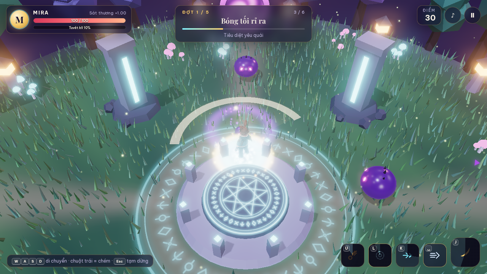
5.1. Lỗi nằm ở đâu?
| Điều bạn thấy | Nơi kiểm trước | Việc nên giao |
|---|---|---|
| Bốt méo ở Tripo và trong game | Ảnh nhiều góc, GLB gốc | Sửa ảnh hoặc asset; chưa sửa ánh sáng game |
| Bốt đúng ở Tripo nhưng tối trong game | Đèn, vật liệu, camera | Chỉnh cảnh; giữ GLB |
| Mira đi nhưng chân không bước | Rig/clip trong GLB | Tạo asset có xương và hoạt ảnh |
| Chạm nút mà không ra chiêu | Input, hồi chiêu, trạng thái game | Tái hiện trên desktop/mobile rồi sửa |
| Quái chết quá nhanh | Luật sát thương/máu | Chỉnh cân bằng, không đổi model |
Một lỗi giày là ví dụ hay: nếu hình khối giày sai ở Tripo, đừng dùng hàng chục prompt Three.js để “che” nó. Ngược lại, nếu chỉ ánh sáng game làm giày mất chi tiết thì tạo lại GLB sẽ tốn credit không cần thiết.
5.2. Mẫu báo lỗi năm câu
Hiện tại: mô tả ngắn bản đang chạy. Cách tái hiện: bấm gì, ở màn nào. Thực tế: thấy gì. Mong muốn: muốn thấy gì. Phải giữ: phần đang đúng.
Ví dụ giả định dưới đây dùng để luyện cách báo lỗi; đây chưa phải lỗi đã xác nhận trong bản game Mira.
Game Mira trên điện thoại dọc, đợt quái thứ hai. Tôi giữ nút Tia Linh Quang khi quái ở gần. Thực tế, tia sáng ra nhưng quái không mất máu. Mong muốn tia gây sát thương khi chạm đúng mục tiêu. Hãy kiểm va chạm và thời gian hồi chiêu, sửa đúng lỗi này; giữ nguyên ngoại hình Mira, tốc độ quái và các chiêu khác. Chạy thử trên localhost, cho tôi xem cách tái hiện trước và sau khi sửa.
Cách thử: lặp lại cùng thao tác ba lần; kiểm quái mất máu và các chiêu khác vẫn chạy. Nếu chưa rõ: yêu cầu agent chỉ ra log hoặc đoạn luật chơi nó đã kiểm, rồi mới tiếp tục sửa.
5.3. Giữ bản tốt làm điểm quay về
Trước khi đổi GLB, rig hay cả hệ chiêu, lưu một phiên bản đang chơi tốt. Bản game hiện có là mốc so sánh. Nếu hoạt ảnh chạy mới đẹp hơn nhưng nút chạm hỏng, chưa nên coi là nâng cấp hoàn thành.
Trong repo Mira, tên file đã tách theo việc: phần nhân vật ở player.js, quái ở enemies.js, chiêu ở skills.js, hiệu ứng ở fx.js, luật chơi ở logic.js. Người mới không cần sửa mã; chỉ cần nhờ agent nói file nào liên quan và vì sao. Nếu agent định sửa nhiều phần không liên quan, hãy dừng để kiểm phạm vi.
5.4. Token giảm khi thông tin đúng
Đừng dán toàn bộ lịch sử chat để hỏi một lỗi. Gửi ảnh đúng khoảnh khắc, mô tả năm câu, tên dự án/file liên quan và điều đã thử. Ngược lại, câu “fix game đi” thường dẫn tới nhiều vòng đoán hơn.
Prompt dừng vòng lặp:
Chúng ta đã thử sửa lỗi này hai lần mà chưa đạt. Hãy ngừng sửa mã. Tóm tắt điều đã xác nhận, điều còn chưa biết và một phép kiểm tiếp theo có thể phân biệt các nguyên nhân. Đừng tạo lại asset hoặc đổi nhiều file trước khi có kết quả kiểm.
Trước khi sang chương 6
- [ ] Tôi phân loại lỗi trước khi nhờ sửa.
- [ ] Tôi có cách tái hiện và ảnh đúng khoảnh khắc.
- [ ] Tôi giữ bản game đang chạy tốt để so sau mỗi thay đổi.
Chương 6 tiếp tục với Mira: chuẩn bị nhân vật, quái và các asset trước khi tạo bản có xương và chuyển động.
Chương 6 — Chuẩn bị nhân vật và quái cho bản Mira tiếp theo
Game Mira đã chơi được. Việc tiếp theo là nâng chất lượng từng asset: Mira cần chuyển động tay chân, quái cần có hình dáng riêng. Trước khi gọi Tripo thêm lần nữa, hãy xác định thứ nào cần mô hình 3D mới, thứ nào chỉ cần chỉnh Three.js.
Sau chương này, bạn làm được: chuẩn bị ảnh tham chiếu, chọn cách tạo asset và nhận ra đâu là concept 2D, đâu là mô hình 3D thật.
6.1. Ba loại asset trong game hiện tại
| Trong game | Hiện được tạo thế nào? | Có cần Tripo ngay không? |
|---|---|---|
| Mira | GLB dựng từ ảnh nhiều góc trong Tripo | Không cần tạo lại để game chạy; cần bản có rig nếu muốn tay chân cử động |
| Slime, Ma Trơi, Thạch Quỷ, trùm | Hình khối và hiệu ứng bằng Three.js | Chưa cần; có thể đổi từng quái sau khi chốt thiết kế |
| Linh Tinh, cột sáng, cổng | Hình học và ánh sáng bằng Three.js | Không; hiệu ứng có thể chỉnh bằng mã |
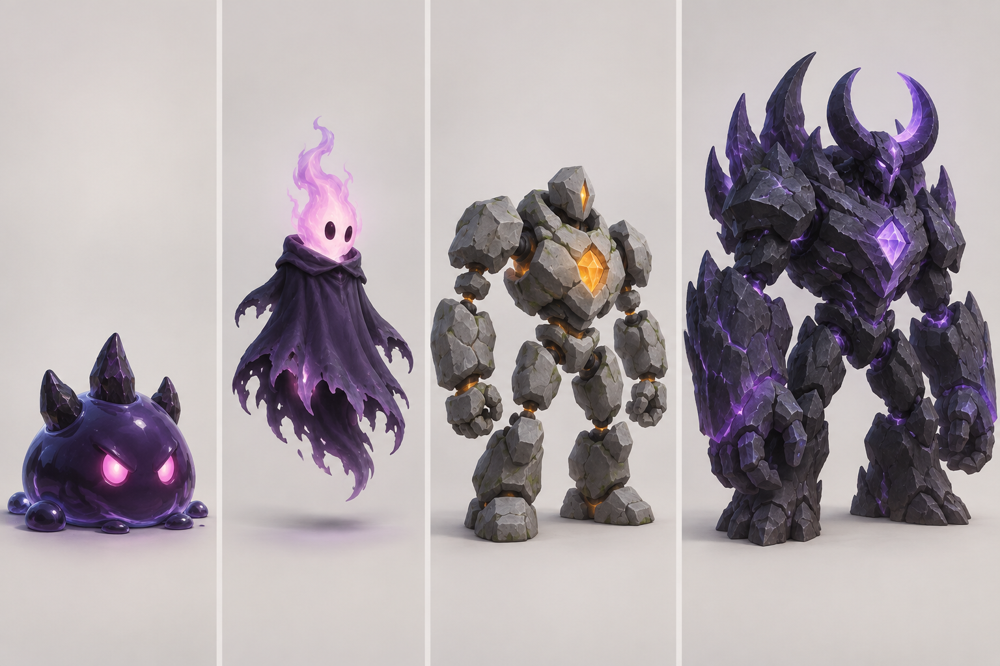
6.2. Làm bộ ảnh nhân vật để phát triển chuyển động
Bốn ảnh trước/sau/trái/phải giúp Tripo dựng hình. Để chuẩn bị animation, cần thêm một ảnh nhân vật toàn thân ở dáng trung tính, tay tách khỏi thân và chân tách nhau. Dáng này giúp công cụ xác định tay, chân, vai, hông. Những ảnh chạy/chém dùng để duyệt phong cách động tác, không thay cho file có xương.
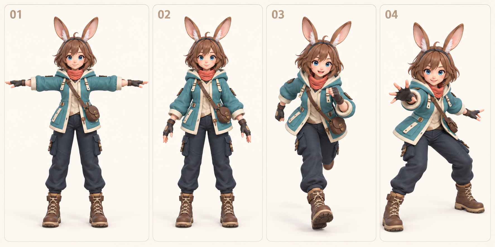
Prompt tạo ảnh tham chiếu bằng ChatGPT:
Dựa trên ảnh chính diện Mira đã duyệt, tạo một ảnh toàn thân tư thế chữ T để chuẩn bị gắn xương 3D. Giữ chính xác tóc, tai, áo khoác xanh ngọc, khăn san hô, túi, quần và hai chiếc bốt. Hai tay đưa ngang, bàn tay mở; hai chân tách nhẹ, đứng thẳng. Nền trắng, ánh sáng đều, không cắt tai hoặc giày. Không thay thiết kế nhân vật. Sau đó tạo thêm ba ảnh riêng để duyệt động tác: đứng nghỉ, chạy và ra chiêu.
Cách thử: đặt ảnh mới cạnh ảnh đã dùng dựng GLB. Nếu dáng chữ T có áo/túi/giày khác, nó là concept sai nhận diện; sửa ảnh trước. Nếu chỉ tư thế thay đổi còn nhận diện giữ nguyên, có thể dùng nó để nói rõ mục tiêu rig. Nếu lỗi: yêu cầu sửa đúng món đồ bị lệch, không tạo nhân vật mới.
6.3. Tripo Studio: dựng hình, Retopo, Rig và Animate
Ảnh preview H3.1 ban đầu có khoảng 502.944 tam giác và giữ ngoại hình tốt. GLB đời đầu đưa vào game có một mesh, không có rig hoặc clip. Bản repo hiện tại đã thay bằng GLB nhẹ hơn có 65 xương; mã game dùng những xương ấy để làm chân tay cử động. Vì thế, bước chuẩn bị asset quyết định phần nào Three.js có thể làm được.
Trong case Mira, Tripo đã yêu cầu Retopo trước khi Rig. Trình tự thực tế là: model đã duyệt → tạo lại lưới và kiểm ngoại hình → gắn xương, kiểm khớp → thử từng clip trong Animate → xuất GLB và kiểm file. Tripo khuyến nghị nhân vật hai chân ở tư thế chữ T hoặc A cho auto-rig; tư thế lạ, đồ rộng hoặc phần thân bị che có thể gắn xương chưa đúng. Chương 7 cho xem ảnh trước/sau Retopo, bộ xương và GIF chuyển động thật của Mira. Tripo Help Center, Tripo Auto Rig.
Các điểm phải nhìn khi thử rig: khớp gối nằm ở gối, không giữa bốt; khuỷu tay gập đúng chỗ; áo và túi không kéo méo vô lý; chân không xuyên đất khi chạy. Nếu model một khối quá dày hoặc nhiều chi tiết chồng, auto-rig có thể không đạt. Khi đó, chọn model phiên bản dễ gắn xương hơn hoặc xử lý asset ở công cụ chuyên 3D; không bảo AI “sửa bằng prompt” khi chưa xem mô hình.
6.4. Thiết kế quái theo thứ tự dễ đến khó
Trong ảnh concept, slime có một khối thân rõ; hồn lửa là vật bay; người đá có tay chân; trùm có nhiều mảnh và sừng. Đây là trình tự học tốt: thử thay slime trước. Nếu thay cả bốn quái cùng lúc, bạn khó biết lỗi do asset, chuyển động hay cân bằng game.
Prompt nâng cấp một quái:
Trong game Mira, hãy giữ nguyên luật chơi của Slime Bóng Tối. Trước tiên phân tích hình khối hiện tại và ảnh concept tôi gửi. Đề xuất cách làm cho slime dễ nhận ra hơn từ camera game: giữ hình khối Three.js hay tạo GLB riêng. Chỉ chọn một cách, làm một bản thử, mở localhost để tôi so trước/sau. Chưa đụng tới Ma Trơi, Thạch Quỷ hoặc trùm.
Cách thử: nhìn slime ở kích thước nhỏ trong game, thử nó tiến lại và nhận đòn. Nếu đẹp ở ảnh cận nhưng khó thấy trong game: tăng độ tương phản hoặc đơn giản hóa hình, không vội tăng polycount.
Trước khi sang chương 7
- [ ] Tôi phân biệt ảnh concept, mô hình GLB và bản có xương.
- [ ] Tôi có ảnh Mira ở dáng trung tính để diễn đạt mục tiêu rig.
- [ ] Tôi chọn một quái đầu tiên để nâng cấp, giữ nguyên luật chơi.
Chương 7 theo từng bước Retopo, Rig và Animate trên Mira, rồi chỉ cách kiểm GLB trước khi nối chuyển động vào game.
Chương 7 — Từ Retopo đến chuyển động của Mira
Phiên bản game đầu tiên dùng Mira không có xương: lúc chạy, cả mô hình nhún và nghiêng như một bức tượng. Tác giả sau đó làm Retopo, gắn xương và thử chuyển động trong Tripo. Repo game mới nhất đã dùng một GLB có 65 xương và có Xưởng chuyển động để xem từng động tác. Chương này đi theo đúng quá trình ấy, kể cả điều bất ngờ ở bước xuất file.
Sau chương này, bạn làm được: giao đúng việc cho Tripo và agent, kiểm tư thế chạy, phân biệt hoạt ảnh nhân vật với hiệu ứng phép và luật chơi.
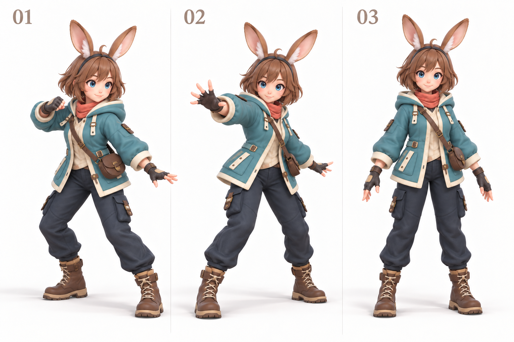
7.1. Rig khác Animate ở đâu?
Hãy hình dung con rối: GLB ban đầu giống tượng có màu; rig là bộ khớp ẩn trong tượng; clip là chuỗi tư thế theo thời gian. Three.js có thể phát clip nếu file chứa chúng; game Mira hiện dùng mã để điều khiển các xương vì file Tripo xuất ra chưa mang theo clip. Three.js Animation System.
Một nhân vật có thể chỉ có một mesh mà vẫn cử động được. File Mira đời đầu thiếu dữ liệu xương và liên kết da với xương; file mới đã có chúng. Bốn lớp cần phân biệt là:
| Thành phần | Hiểu đơn giản | Quan sát trên Mira |
|---|---|---|
| Mesh | Bề mặt có màu và hình khối | Mặt, tóc, áo, quần, bốt |
| Rig / skeleton | Bộ xương và các khớp | Vai, khuỷu, hông, gối, cổ chân xoay riêng |
| Skin weight | Mức độ mỗi vùng da đi theo khớp | Quần gập theo gối mà không gãy khúc |
| Clip animation | Chuỗi tư thế theo thời gian | Đứng thở, đi, chạy, tung chiêu |
Một pose là một tư thế ở một thời điểm. Rig tạo khớp và liên kết bề mặt với khớp; Animate tạo các pose nối tiếp thành clip. Có rig mà chưa có clip, Mira vẫn chưa tự đi. Có clip nhưng xuất file thiếu rig hoặc skin, game không thể gập chân tay đúng.
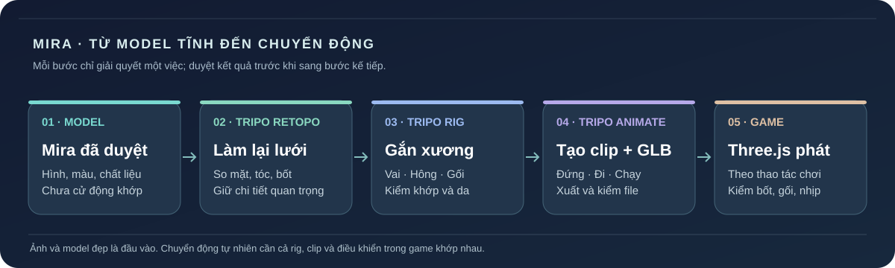
| Mong muốn | Cần thêm gì? | Ai làm phần nào? |
|---|---|---|
| Mira đứng thở nhẹ | Chuyển động idle trên xương | Bản game hiện tại dùng chuyển động do mã tạo; clip Tripo chỉ dùng nếu kiểm thấy có trong GLB |
| Mira đi và chạy | Chuyển động walk/run trên xương | Agent đồng bộ nhịp chân với quãng đường nhân vật đi |
| Mira chém bằng tay | Chuyển động attack trên thân trên | Agent cho động tác phát khi chiêu kích hoạt, kể cả lúc chạy |
| Mira nhảy qua vật cản | Chuyển động jump và luật nhảy/va chạm | Chuyển động tạo dáng; game quyết định độ cao, thời điểm tiếp đất |
| Tia sáng bắn ra | Không cần rig của Mira để vẽ tia | Three.js tạo hiệu ứng; luật chơi tính trúng đích |
Điểm quan trọng: dù chuyển động đến từ clip hay mã điều khiển xương, dáng nhảy chỉ là phần nhìn thấy. Nếu game chưa có cơ chế nhảy, va chạm và nút nhảy, nhân vật có thể làm động tác bật lên mà vẫn đứng một chỗ.
7.2. Quy trình nâng cấp đúng thứ tự
Bước 1 — Giữ bản gốc. Sao lưu GLB đời đầu và chụp cùng một góc Mira trong game. Bản gốc là điểm so nếu rig mới làm méo mặt, áo hoặc bốt.
Bước 2 — Xử lý yêu cầu Retopo của Tripo. Trong lần làm Mira này, Tripo yêu cầu Retopology trước khi gắn xương. Retopo là tạo lại lưới bề mặt để model nhẹ và các vùng khớp có cấu trúc phù hợp hơn. Đây là thao tác trên model 3D, chưa tạo xương hay chuyển động. Đừng suy ra mọi dự án đều cần chọn cùng một thông số; hãy nhìn mục tiêu và kiểm bản xem trước.
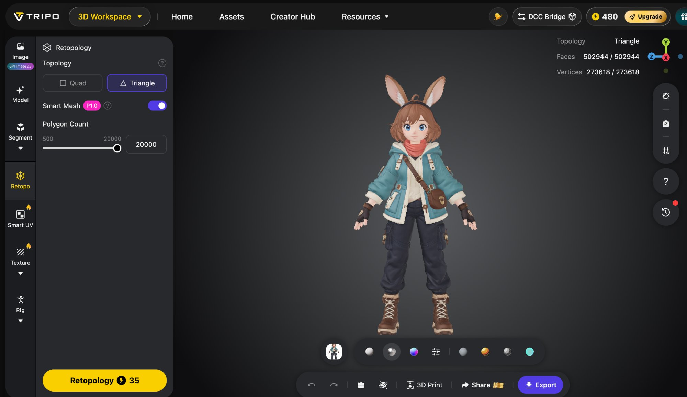
Với nhân vật sẽ gập tay chân, tác giả đã chọn Quad, bật Smart Mesh và đặt Polygon Count 20.000 theo giới hạn giao diện lúc đó. Quad giúp bố trí các vòng lưới quanh khớp dễ kiểm hơn, nhưng chất lượng gập vẫn phụ thuộc lưới và skin weight thực tế; không có nút nào bảo đảm tự động giữ nguyên mọi chi tiết. Con số 20.000 là mức yêu cầu, không phải số mặt của file kết quả. Sau khi xử lý, màn hình Rig ghi 10.756 mặt Quad. So trước–sau ở mặt, mắt, tóc, tai, ngón tay, túi và bốt trước khi bấm Rig. Nếu chi tiết quan trọng bị mất, quay lại lịch sử và thử cấu hình khác.
Bước 3 — Gắn xương trong Tripo. Mở bản Mira sau Retopo, vào Rig, chọn Humanoid vì Mira có hai tay và hai chân. Giao diện gợi ý dáng T hoặc A: tay tách khỏi thân giúp vùng vai, nách và hông dễ nhận hơn. Danh sách Skeleton Preset là các định dạng bộ xương; ảnh kết quả của tác giả hiển thị preset Mixamo ngay bên trong Tripo. Người mới không cần chuyển sang phần mềm khác để làm theo case này. Tripo Help Center.
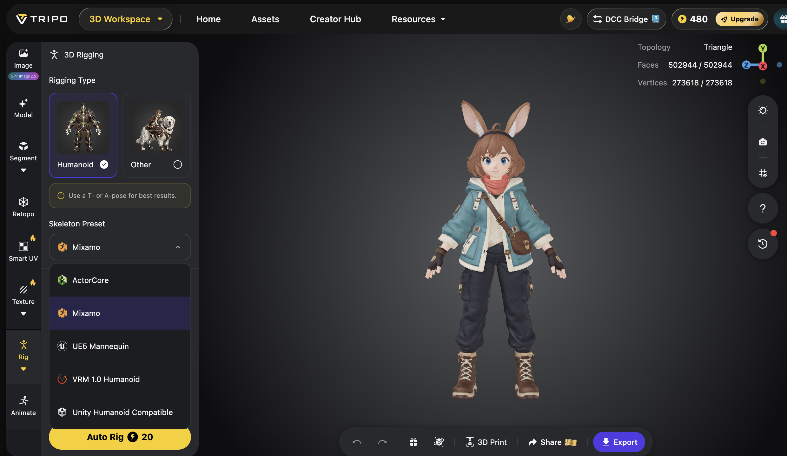
Bước 3a — Kiểm kết quả rig trước khi tạo clip. Ảnh kết quả cho thấy xương hông, cột sống, vai, tay, gối và chân đã hiện đúng vùng cơ thể; bàn tay cũng có các khớp ngón. Đây là bằng chứng có xương, chưa chứng minh clip hoạt ảnh đã tốt. Xoay Mira từ trước, bên và sau; kiểm gối, bốt, vạt áo và túi khi thử động tác. Tai thỏ chưa có xương riêng nên sẽ đi theo đầu; trong phiên bản nhập môn, điều đó chấp nhận được.
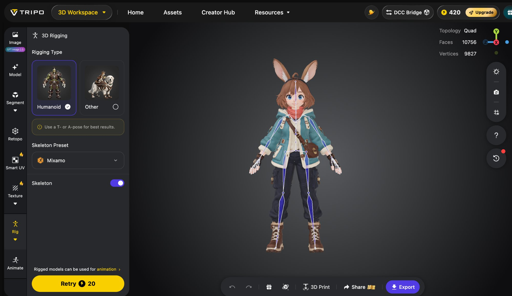
Bước 4 — Tạo từng clip trong Tripo Animate. Bắt đầu bằng idle, walk, run; thêm stop nếu tìm được chuyển động phù hợp. Chỉ thêm chiêu, nhảy, trúng đòn hoặc ngã sau khi đi và chạy đạt. Thử preset phù hợp trước, xem từng clip ở góc trước và bên. Nếu preset chưa đúng tính cách Mira, dùng ô Create Your Own Animation để mô tả một động tác ngắn mỗi lần. Một yêu cầu chứa cả đứng, chạy, nhảy và đánh sẽ khó kiểm lỗi.
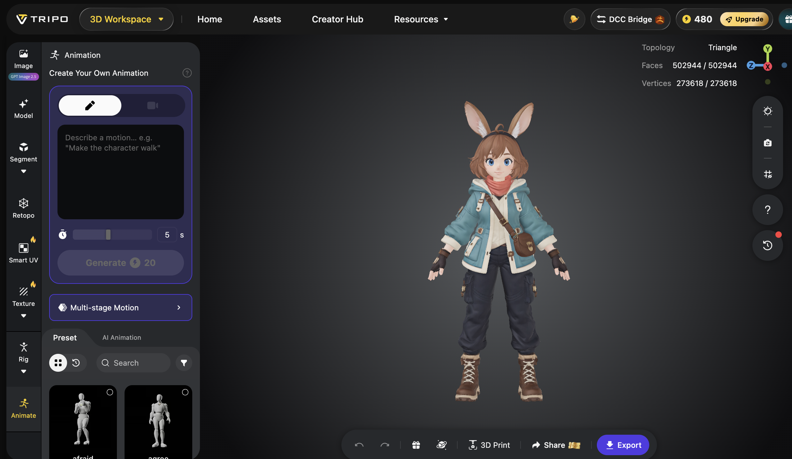
Mô tả mẫu để thử, mỗi lần một động tác:
Đứng: Nhân vật đứng yên, thở nhẹ, vai nhấc rất ít, đầu nhìn quanh chậm, hai bốt giữ trên mặt đất. Chuyển động lặp mượt, không bước đi.
Đi: Nhân vật đi tại chỗ với bước ngắn tự nhiên, tay đối nhịp với chân, gót chạm rồi đến mũi chân, đầu ít rung. Vòng lặp không dịch chuyển nhân vật khỏi điểm bắt đầu.
Chạy: Nhân vật chạy tại chỗ, hai chân luân phiên, tay đánh nhịp rõ hơn lúc đi, thân nghiêng nhẹ. Giữ vòng lặp đều, không làm tai, áo hoặc bốt biến dạng.
Nếu Tripo có lựa chọn in-place / tại chỗ, dùng cho game Mira vì mã game đã quyết định nhân vật đi đâu. Nếu không thấy tùy chọn này, xem preview và nhờ agent kiểm clip có kéo model tiến về phía trước không. Sau khi các clip đạt, xuất GLB có skeleton và animation; mở lại file để xác nhận dữ liệu thực sự có trong file. Tripo Studio; Tripo: preset và xuất nhân vật có hoạt ảnh.
Ba clip tác giả đã xem thử trên chính Mira:
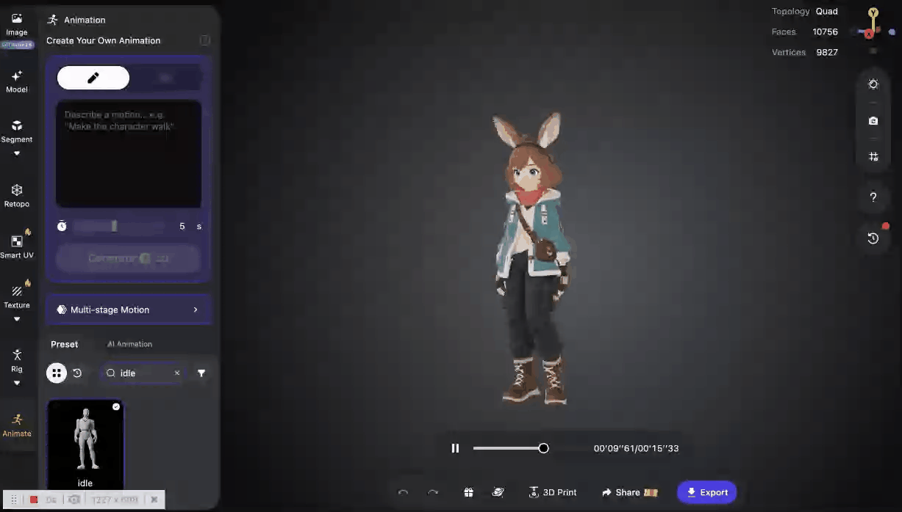
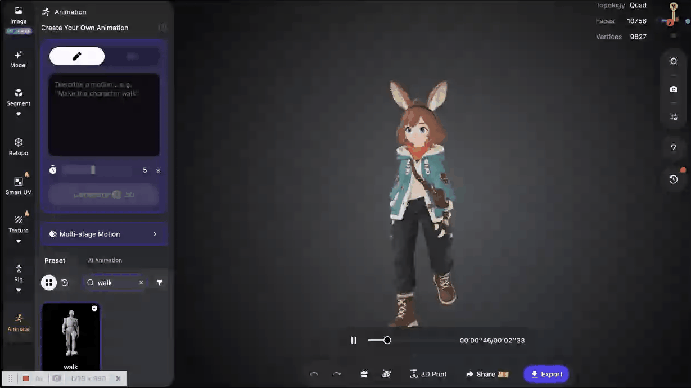
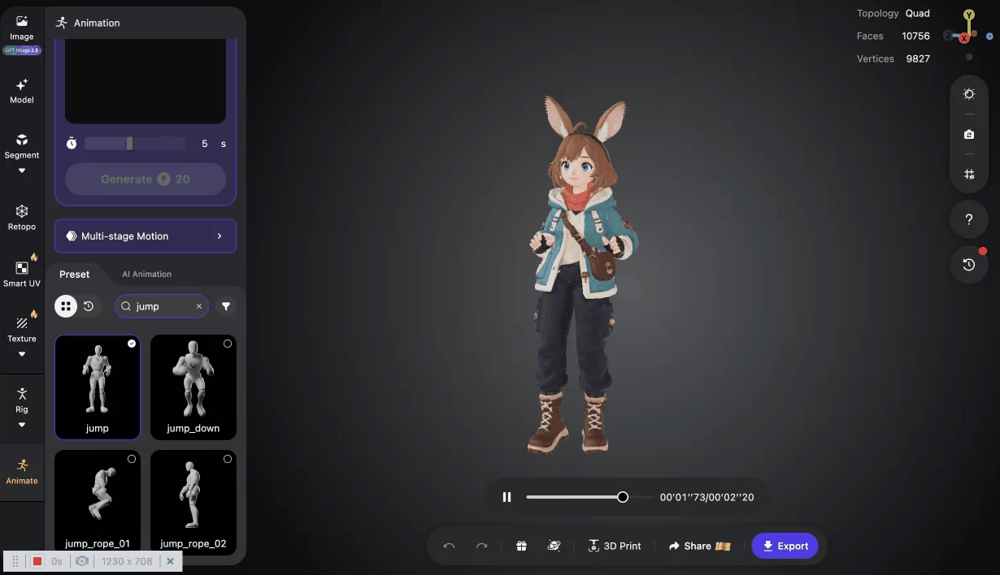
Sau khi duyệt idle và walk, tìm preset run vừa phải, không cần kiểu chạy nước rút. Stop là clip tùy chọn: nếu không có preset phù hợp, game có thể chuyển mượt từ walk/run về idle trước. Chỉ tạo stop riêng khi cảnh dừng còn giật và bạn đã xác định rõ lỗi. Sau đó mới thử slash/cast/jump theo nhu cầu game; mỗi lần thêm một clip và kiểm trong game. Tên clip, số credit và cách gộp clip có thể thay đổi theo giao diện, nên xem danh sách clip trong file xuất ra. Nếu Tripo xuất từng clip thành từng GLB, đặt tên dễ hiểu như mira_idle.glb, mira_walk.glb, mira_run.glb và gửi đủ cho agent; nếu xuất được chung, dùng một file mira_rigged.glb.
Bước 5 — Kiểm file xuất ra, rồi mới nối vào game. Agent đã đọc file Tripo và phát hiện: có xương, có liên kết da, nhưng không có clip hoạt ảnh. Một số GLB được đặt tên theo động tác còn thiếu cả skin. Vì vậy ba GIF ở trên là preview trong Tripo, không phải bằng chứng các động tác đã nằm trong GLB. Repo game hiện dùng public/mira-rigged.glb làm nhân vật chính; public/mira.glb không xương là bản dự phòng.
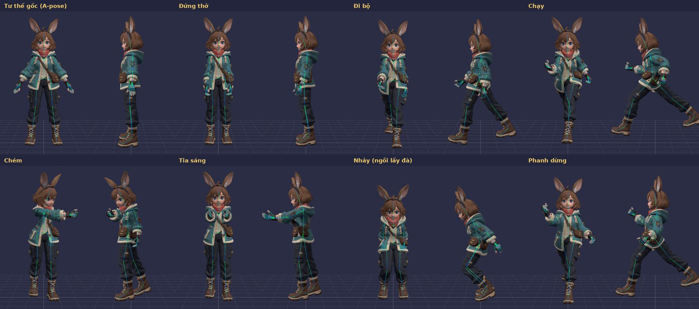
Bước 6 — Tạo chuyển động trên bộ xương đã có. Trong repo, mã chuyển động điều khiển 65 xương để Mira đứng thở, đi, chạy, dừng, chém, bắn, nhảy, lướt, trúng đòn và ngã. Nhịp chân được gắn với quãng đường Mira thực sự đi để giảm trượt bốt; khi ngừng chạy có động tác phanh. Người mới không cần viết các góc xương bằng tay: hãy giao agent mở Xưởng chuyển động và sửa đúng động tác chưa đạt. Nếu một lần xuất Tripo sau này có clip dùng được, agent có thể kiểm và thay từng động tác, không phải làm lại cả game.
Prompt cho agent sau khi xuất GLB:
Tôi gửi GLB mới của Mira từ Tripo. Trước khi thay vào game, hãy báo riêng: (1) có bộ xương và skin không, (2) có bao nhiêu clip thực sự nằm trong file, tên và thời lượng từng clip, (3) kích thước file. Giữ GLB cũ làm dự phòng. Nếu không có clip, dùng bộ xương để tạo bản thử đứng, đi và chạy trong game; mở Xưởng chuyển động cho tôi xem trước, bên và góc chơi. Đồng bộ bước chân với tốc độ di chuyển, giữ nguyên quái và luật chơi.
Cách thử: đứng 3 giây, chạy thẳng, đổi hướng, dừng, chém. Nếu chân trượt, hỏi agent so tốc độ di chuyển trong game, tốc độ phát clip và chuyển động có sẵn trong clip. Nếu Mira chạy ra khỏi vị trí điều khiển, kiểm clip có dịch chuyển toàn thân hay không trước khi thêm mã bù. Nếu rig méo ở đầu gối hoặc áo: quay về Tripo/asset; đổi mã Three.js thường không sửa được trọng lượng khớp sai.
Nếu xuất xong nhưng game vẫn chỉ nhún cả người: yêu cầu agent báo file GLB mới có skin và animation hay không; đừng suy ra từ nút Export. Nếu bốt lún đất: kiểm vị trí gốc nhân vật, độ cao đặt model và khung hình chân chạm đất. Nếu vai hoặc túi méo: kiểm preview của rig ở Tripo trước; lỗi nằm ở liên kết da, không phải ở tốc độ chạy của game.
7.3. Từ dáng đẹp đến tư thế chơi đẹp
Một ảnh tư thế “ngầu” chưa chắc đọc được trong camera game nhìn từ trên. Hãy thử trên nền thật, ở kích thước Mira xuất hiện khi chơi. Khi chạy, thân nghiêng nhẹ theo hướng; hai tay và hai chân đổi nhịp; bốt chạm đất rõ. Khi chém, người chơi phải nhận ra ba nhịp chuẩn bị → ra đòn → hồi về. Nếu ra chiêu quá nhanh hoặc ánh sáng che tay, giảm hiệu ứng hoặc kéo rõ nhịp động tác trước khi thêm chi tiết.
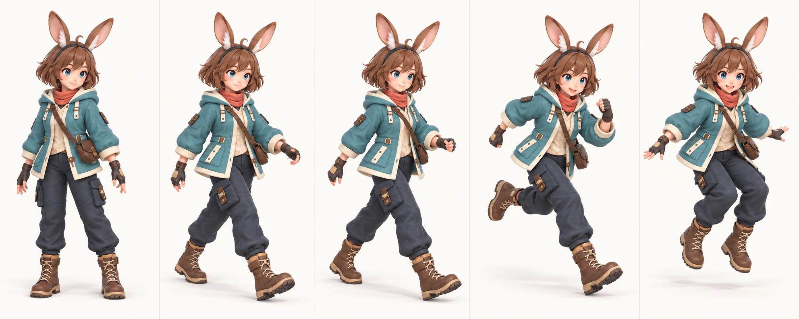
Bài tập ngắn: chọn hai ảnh bước đi ở giữa, chỉ ra chân nào đang đưa lên và chân nào đang chịu lực. Sau khi có bản rig, xem clip ở tốc độ chậm và so đúng hai khoảnh khắc ấy. Nếu cả hai bốt cùng lướt trên đất, cần sửa clip hoặc tốc độ phát trước khi thêm hiệu ứng chạy.
7.4. Phép thuật có ba lớp dễ kiểm
Lấy Tia Linh Quang làm ví dụ. Lớp 1 là luật: chiêu bắn khi nào, trúng ai, gây bao nhiêu sát thương. Lớp 2 là tư thế: Mira hướng tay về mục tiêu, nếu đã có clip phù hợp. Lớp 3 là hiệu ứng: tia sáng, hạt, âm thanh, rung nhẹ và số sát thương. Chỉ làm lớp 3 sẽ đẹp mắt nhưng dễ sai cảm giác trúng đích; chỉ làm lớp 1 thì khó biết mình đã đánh trúng.
Prompt nâng cấp một chiêu:
Hãy nâng cấp riêng chiêu Tia Linh Quang trong game Mira. Trước tiên mô tả ba lớp hiện tại: luật trúng đích, tư thế nhân vật và hiệu ứng hình/âm. Giữ nguyên sát thương và hồi chiêu. Nếu GLB mới có clip phù hợp, phát clip khi bắn; nếu không, nói rõ và giữ tư thế hiện có. Làm tia dễ nhìn nhưng không che quái hay cảnh báo nguy hiểm. Mở localhost, thử một mục tiêu đứng gần và một mục tiêu di chuyển.
Cách thử: nhìn thời điểm bấm, thời điểm tia chạm, thanh máu quái và lúc chiêu hồi. Nếu hiệu ứng đẹp mà máu không giảm, sửa luật/va chạm; nếu máu giảm trước khi tia chạm, đồng bộ thời điểm.
Trước khi sang chương 8
- [ ] Tôi phân biệt file Mira đời đầu không xương với file mới có 65 xương nhưng không có clip xuất từ Tripo.
- [ ] Tôi phân biệt được mức Retopo đã chọn với số mặt Quad thực tế của bản kết quả.
- [ ] Tôi duyệt riêng động tác đứng, đi và chạy trước khi thêm động tác đánh.
- [ ] Tôi kiểm file GLB có rig, skin và bao nhiêu clip; nếu chưa có clip, tôi yêu cầu agent thử chuyển động trên bộ xương như repo Mira.
- [ ] Tôi thử chân, gối, tay và bốt ở góc camera chơi.
- [ ] Tôi tách luật, tư thế và hiệu ứng của một chiêu.
Chương 8 chỉ cách tiếp tục từ chính repo Mira đã chạy, thay vì bắt đầu dự án mới mỗi lần muốn nâng cấp.
Chương 8 — Mở rộng repo Mira thay vì làm game mới
Mira đã có một repo chạy được. Mỗi ý tưởng tiếp theo nên bắt đầu từ bản đó: xem hiện trạng, chọn một phần, sửa và chơi lại. Đây là cách người mới làm chủ dự án mà không cần tự viết mã.
Sau chương này, bạn làm được: giao agent đọc đúng repo, chọn phạm vi sửa và giữ bản cũ làm điểm quay về.
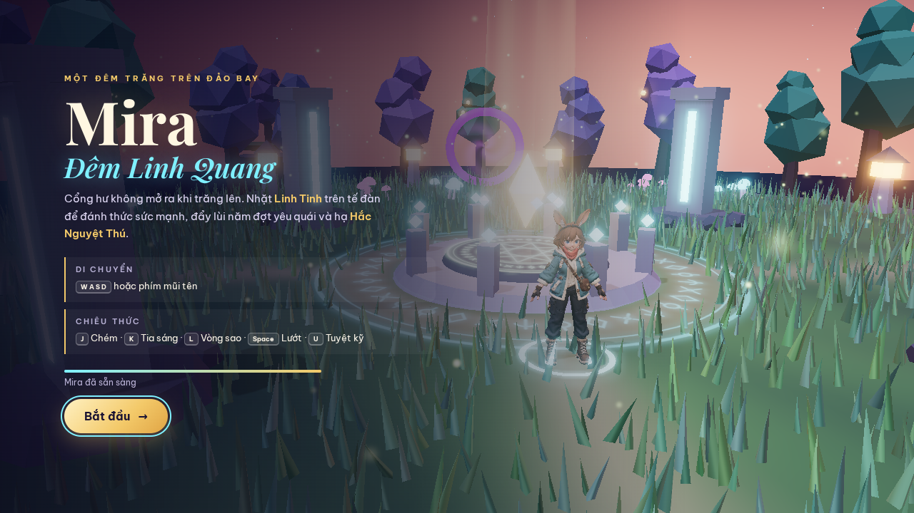
8.1. Đọc repo như đọc sơ đồ căn nhà
| Bạn muốn thay | Nơi agent cần kiểm trong repo Mira |
|---|---|
| Mira hiện và chuyển động | player.js, mira-rigged.glb, thư mục src/anim/ |
| Quái và trùm | enemies.js, logic.js |
| Tia sáng, vệt chém, hạt | skills.js, fx.js |
| Đảo bay, cổng, cây cỏ | world.js |
| Nút chạm và bàn phím | input.js, style.css |
| Tiếng bước, chiêu và nhạc nền | audio.js, thư mục public/audio |
| Xem từng chuyển động ở nhiều góc | studio.js, thư mục src/anim |
| Luồng màn chơi, camera, HUD | main.js |
Bạn không cần nhớ các tên file. Bảng này giúp nhận ra khi một yêu cầu nhỏ lại khiến agent sửa gần cả repo. Nếu muốn đổi màu tia sáng mà agent định làm lại cơ chế quái, hãy yêu cầu giải thích trước.
8.2. Một hành động trong game đi qua những phần nào?
Lấy việc nhặt Linh Tinh làm ví dụ. Người chơi đưa Mira tới tế đàn bằng bàn phím hoặc cần ảo. Game kiểm khoảng cách; khi đủ gần, vật trên tế đàn biến mất, phát tiếng nhặt, hiện cột sáng và mở đợt quái tiếp theo. Từ góc nhìn người chơi, đó là một khoảnh khắc. Trong repo, nhiều bộ phận phối hợp để tạo ra khoảnh khắc ấy.
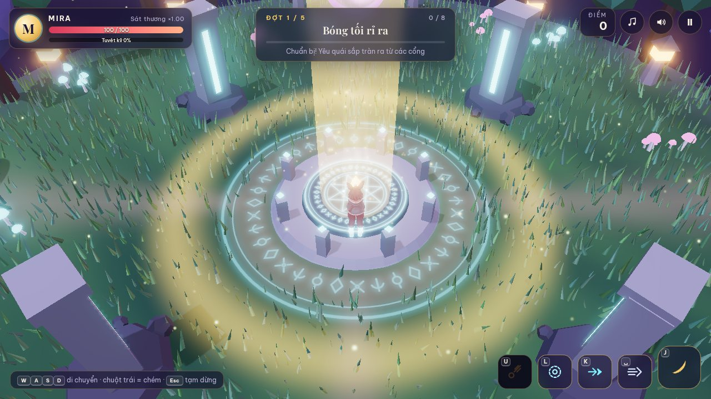
| Điều người chơi thấy | Phần chịu trách nhiệm trong repo |
|---|---|
| Mira tiến đến tế đàn | input.js nhận thao tác; player.js và main.js cập nhật vị trí |
| Nhặt khi đến đủ gần | main.js kiểm khoảng cách và gọi xử lý nhặt |
| Vật biến mất, ánh sáng xuất hiện | world.js, fx.js |
| Có tiếng nhặt và chữ báo | audio.js, giao diện trong main.js |
| Đợt quái tiếp theo bắt đầu | logic.js, enemies.js, main.js |
Bài học: khi báo lỗi, hãy nói khâu nào trong chuỗi chưa xảy ra. “Tôi chạm Linh Tinh, vật biến mất nhưng đợt quái không bắt đầu” giúp agent khoanh vùng nhanh hơn “game lỗi”.
8.3. Prompt giao việc trên repo có sẵn
Đây là repo Mira · Đêm Linh Quang. Trước tiên đọc README, chạy bản hiện tại và liệt kê phần nào đang hoạt động. Tôi muốn nâng cấp [một việc]. Hãy chỉ ra file liên quan, ảnh hoặc asset đầu vào cần có và hai cách kiểm kết quả. Giữ nguyên phần chơi đã chạy. Làm xong, mở localhost để tôi chơi lại trên desktop và bố cục mobile; báo file đã sửa và lỗi còn lại.
Cách thử: chơi lại từ màn mở đầu đến nhặt Linh Tinh. Nếu nâng cấp quái, tiếp tục tới đúng đợt quái đó. Nếu lỗi: quay về bản trước rồi sửa trong phạm vi một việc.
8.4. Lấy một vòng nâng cấp làm mẫu
Giả sử bạn muốn thay Slime Bóng Tối bằng nhân vật trong ảnh concept. Đừng bắt đầu bằng “thay hết quái cho đẹp hơn”. Vòng đúng là: duyệt concept → chọn cách dựng hình → đổi đúng slime → giữ cách di chuyển/tấn công → chơi thử → so trước/sau. Nếu hình mới đẹp khi nhìn gần nhưng mờ trong camera game, chỉ sửa độ đọc của slime. Chưa cần động tới Ma Trơi, Thạch Quỷ hoặc trùm.
8.5. Xưởng chuyển động giúp duyệt gì?
Repo có màn Xem chuyển động ngay ở menu đầu. Tại đây, người đọc có thể chọn đứng, đi, chạy, dừng hoặc ra chiêu; đổi góc camera, chỉnh tốc độ và bật đường xương. Đây là nơi tốt để kiểm dáng nhân vật, trước khi kiểm luật chơi trong màn chiến đấu. Bản này dùng chuyển động được dựng bằng mã trên bộ xương của Mira, vì GLB xuất từ Tripo không chứa các clip keyframe đã xem trong preview.
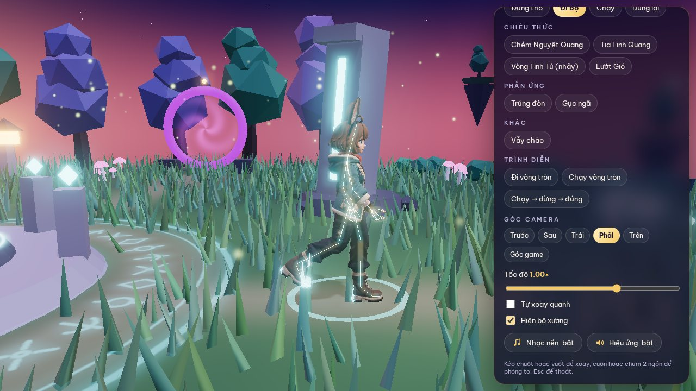
Trước khi sang chương 9
- [ ] Tôi mở được bản gốc trước khi sửa.
- [ ] Tôi biết một yêu cầu gắn với nhóm file nào.
- [ ] Tôi thử lại vòng chơi sau khi đổi asset hoặc luật.
Chương 9 giúp chọn lúc nào làm thủ công trong Studio, lúc nào để agent gọi công cụ ngoài.
Chương 9 — Dùng công cụ đúng lúc trong dự án Mira
Game Mira cho thấy không phải việc gì cũng cần thêm plugin hoặc MCP. Bộ ảnh được duyệt bằng mắt, model được xem trong Tripo Studio, rồi file GLB được đưa cho agent làm game. Repo game còn có Xưởng chuyển động riêng để kiểm xương và dáng đi sau khi nhập GLB. Hai nơi xem thử này có mục đích khác nhau: Tripo chuẩn bị asset, Xưởng của game kiểm asset hoạt động trong mã. Chương này giúp bạn chọn công cụ theo việc đang mắc, không theo danh sách công cụ có thể cài.
Sau chương này, bạn làm được: phân biệt ba lớp hỗ trợ, quyết định lúc dùng Studio và lúc tự động hóa.
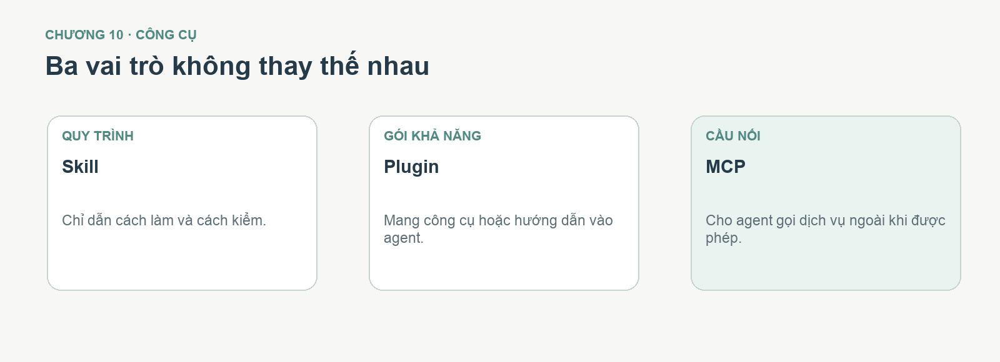
9.1. Ba từ cần nhớ
| Tên | Hiểu bằng một câu | Ví dụ Mira |
|---|---|---|
| Skill | Bộ hướng dẫn để agent làm theo một quy trình | Brainstorm trước khi thay cả hệ chiến đấu |
| Plugin | Gói mở rộng chức năng | Gói có công cụ làm việc với Tripo |
| MCP | Cầu nối để agent gọi một công cụ ngoài | Agent gửi ảnh tới dịch vụ tạo 3D |
Ba thứ này không thay thế ảnh tham chiếu tốt. Một MCP nạp nhầm góc ảnh vẫn có thể cho model sai. Vì thế ở case Mira, việc chuẩn bị bốn góc và tự xoay preview trong Tripo là một phần của chất lượng, không phải thao tác thừa.
9.2. Chọn Studio hay tự động hóa?
Khi thử một nhân vật, hãy ưu tiên cách bạn nhìn và kiểm được: nạp ảnh vào Tripo Studio, xem trước/sau/trái/phải, kiểm bốt, rồi xuất GLB. Khi cần tạo nhiều asset giống quy trình nhau, MCP/API có thể tiết kiệm thao tác, nhưng phải có tiêu chí tự động dừng khi đầu vào hoặc preview chưa đạt.
| Nếu bạn đang… | Cách hợp lý |
|---|---|
| Chọn bản Mira đẹp nhất, kiểm bốt và tóc | Tripo Studio, duyệt thủ công |
| Tạo nhiều biến thể slime theo cùng quy tắc | Cân nhắc MCP/API sau khi chốt mẫu |
| Tìm vì sao chân không gập | Kiểm GLB và rig, không gọi tạo ảnh mới |
| Lên kế hoạch đổi toàn bộ hệ quái | Brainstorm, chọn một quái làm mẫu trước |
9.3. Prompt cho việc có thể tốn credit
Tôi muốn tạo một quái mới cho game Mira bằng Tripo. Trước khi dùng lượt tạo trả phí, hãy đề xuất ảnh tham chiếu, số góc cần có và dáng phù hợp với camera game. Báo chi phí hiển thị ở thời điểm thao tác, định dạng GLB cần xuất và cách kiểm mặt, tay, chân khi xem trong game. Làm một bản thử, mở preview cho tôi xem rồi dừng; không tự lặp thêm lượt tạo khi chưa có nhận xét.
Cách thử: prompt phải tạo ra kế hoạch và tiêu chí kiểm trước khi tiêu credit. Nếu agent chỉ nói “tôi sẽ làm đẹp hơn”: yêu cầu nêu rõ chi tiết nào cần sửa và ảnh nào dùng để đối chiếu.
Trước khi sang chương 10
- [ ] Tôi chọn công cụ theo việc cần làm, không cài mọi thứ trước.
- [ ] Tôi duyệt đầu vào và preview dù thao tác bằng MCP.
- [ ] Tôi biết chi phí và điểm dừng trước một lần tạo asset.
Chương 10 chọn một lộ trình nâng cấp từ bản Mira đang chơi được đến phiên bản có hành động và hình ảnh nhất quán hơn.
Chương 10 — Kế hoạch nâng cấp và chia sẻ game Mira
Bạn đã có một game thực sự chơi được và một nhân vật đã cử động bằng xương. Đây là chương cuối của dự án Mira. Ta nhìn lại vòng chơi đã có, chọn một cải tiến nhỏ và kiểm cả desktop lẫn điện thoại trước khi chuyển sang dự án khác.
Sau chương này, bạn làm được: chọn thứ tự nâng cấp, biến một ý tưởng truyện thành tính năng nhỏ có thể thử, kiểm từng mốc và nói trung thực điều đã có, điều mới là concept.
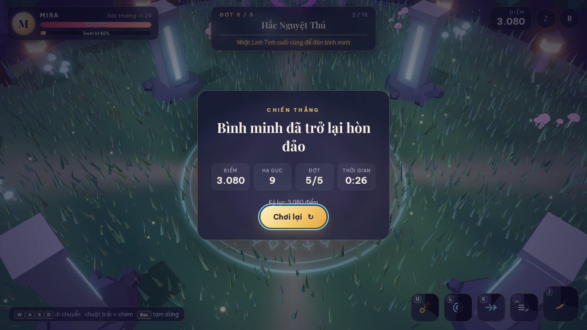
10.1. Năm mốc cho phiên bản kế tiếp
| Mốc | Việc làm | Đầu ra cần duyệt |
|---|---|---|
| 1. Nhân vật | Rig và bộ chuyển động đã có; tiếp tục sửa dáng chưa đạt | Xem Xưởng chuyển động ở nhiều góc, thử bốt trong game |
| 2. Quái đầu tiên | Nâng cấp Slime Bóng Tối | Hình mới đọc rõ, luật cũ vẫn đúng |
| 3. Một chiêu | Đồng bộ tư thế, tia sáng và sát thương | Bấm → thấy ra chiêu → quái phản hồi đúng |
| 4. Bối cảnh | Chỉnh đường đi và ánh sáng nơi dễ lạc | Người mới tìm được tế đàn, quái và cổng |
| 5. Mobile | Thử máy thật, giảm phần làm chậm | Đi/chém/né được bằng ngón tay, hình đủ rõ |
Không cần làm cả năm mốc trong một prompt. Chọn một mốc đang cần nhất, duyệt xong mới sang mốc khác. Mỗi mốc có một ảnh hoặc video “trước”, một bản chạy “sau” và hai câu nhận xét.
10.2. Ba ý tưởng phát triển từ cùng một câu chuyện
Ở Chương 3, ta phác thảo tuyến truyện từ Linh Tinh đến cổng trùm. Muốn người chơi cảm thấy câu chuyện đó, không nhất thiết thêm đoạn văn dài. Có thể thay bằng ba tín hiệu trong lúc chơi. Mỗi tín hiệu giải quyết một việc cụ thể:
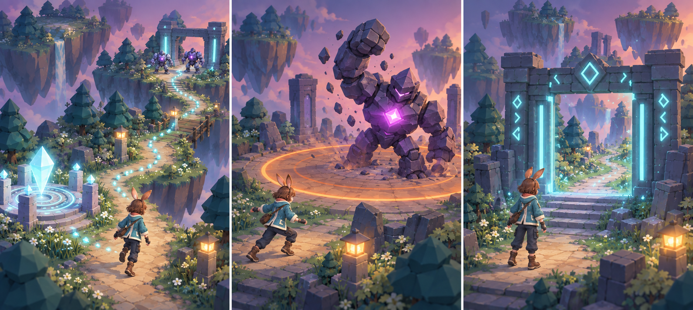
| Gợi ý | Người chơi hiểu thêm điều gì? | Bản thử nhỏ nhất |
|---|---|---|
| Dấu sáng dẫn đường | Sau khi nhặt Linh Tinh, cần đi về phía cổng | Chỉ hiện một dải sáng ngắn khi người chơi chưa tìm được đường |
| Cảnh báo trùm rõ hơn | Đòn mạnh sắp rơi ở đâu và còn thời gian để né | So vòng cảnh báo cũ/mới ở cùng camera, giữ sát thương cũ |
| Cổng đổi trạng thái | Chiến thắng đã mở đường tiếp | Sau khi trùm bị hạ, rune trên cổng sáng và hiện lối đi; chưa cần màn mới |
Prompt cho một nhánh, không làm cả ba:
Game Mira hiện đã có tế đàn, các đợt quái và trùm. Hãy nâng cấp riêng tín hiệu dẫn đường sau khi nhặt Linh Tinh: đề xuất một dấu sáng ngắn trên đường đi, không biến cả màn thành đường kẻ phát quang. Trước khi sửa, cho tôi xem ảnh trạng thái hiện tại và vị trí dự kiến. Giữ nguyên quái, chiêu, sát thương và hiệu năng mobile. Làm một bản thử, mở localhost, thử với người chưa biết bản đồ và ghi xem họ tìm được hướng đi hay không.
Cách thử: cho một người mới chơi từ lúc nhặt vật. Nếu họ vẫn không biết hướng đi, kiểm vị trí và thời điểm xuất hiện của dấu sáng. Nếu người chơi đã biết đường mà vẫn bị hiệu ứng bám theo liên tục, giảm hoặc tắt nó sau khi đã học được đường.
10.3. Khi nào thêm bối cảnh và hiệu ứng?
Bối cảnh hiện có đảo bay, cỏ, cổng và tế đàn. Nếu người chơi không biết đi đâu, việc đầu tiên là làm rõ đường và mục tiêu, không thêm nhiều cây. Nếu quái bị chìm vào nền, chỉnh tương phản hoặc kích thước trước khi tăng độ phức tạp model. Nếu phép làm màn hình trắng, giảm ánh sáng ở đúng khoảnh khắc.
Prompt nâng bối cảnh theo mục tiêu chơi:
Tôi muốn người mới dễ nhận ra tế đàn và đường đi trong game Mira. Hãy mở bản đang chạy, chụp một ảnh lúc bắt đầu và một ảnh lúc có quái. Chỉ đề xuất tối đa ba thay đổi về ánh sáng, màu hoặc vị trí đạo cụ để hướng mắt người chơi. Giữ lối chơi và hiệu năng mobile. Làm một bản thử, cho tôi so ảnh trước/sau cùng góc camera.
Cách thử: nhờ một người chưa chơi tìm Linh Tinh mà không được chỉ tay. Nếu họ vẫn lạc: sửa tín hiệu dẫn đường, không thêm lời giải thích dài lên màn hình.
10.4. Đưa dự án cho người khác xem
Trước khi chia sẻ, thử toàn bộ vòng chơi: mở màn → di chuyển → nhặt Linh Tinh → gặp các loại quái → đánh trùm → thắng hoặc thua → chơi lại. Trên desktop, thử bàn phím và chuột. Trên điện thoại thật, thử cần ảo và nút chiêu. Ảnh chụp mobile trong sách cho thấy bố cục ở kích thước nhỏ; nó chưa chứng minh tốc độ trên mọi điện thoại.
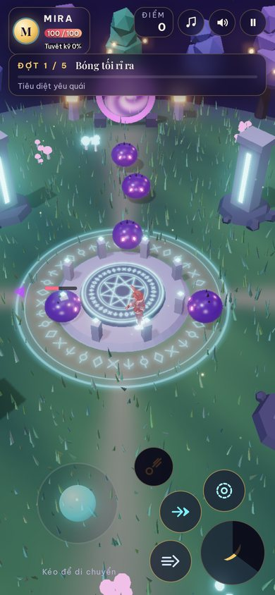
Khi giới thiệu dự án, ghi rõ: game hiện chạy được, Mira đã có 65 xương và chuyển động dựng bằng mã trên bộ xương. Những GIF ở Tripo là preview; GLB xuất ra chưa chứa clip hoạt ảnh tương ứng. Ảnh concept quái và các tính năng tương lai vẫn là định hướng, chưa phải asset đang chơi. Cách nói đó giúp người đọc thấy đúng quá trình phát triển.
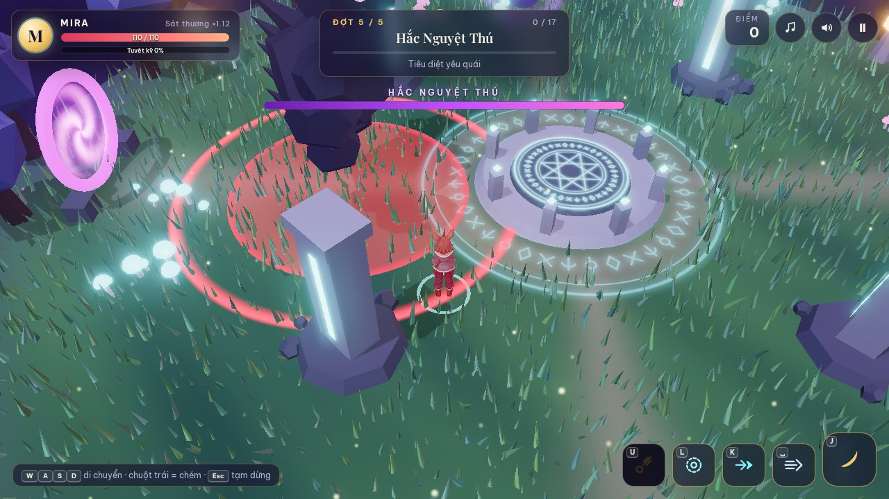
Prompt kiểm cuối:
Hãy chạy bản game Mira hiện tại và kiểm vòng chơi từ màn mở đầu tới thắng hoặc thua. Ghi rõ phần đã thử trên desktop, phần đã thử ở bố cục mobile trong trình duyệt và phần chỉ có thể xác nhận bằng điện thoại thật. Chụp ảnh ba mốc: bắt đầu, chiến đấu, kết thúc. Báo lỗi chặn việc chơi và sửa đúng lỗi đó; chưa mở thêm tính năng mới.
10.5. Xem bản game Mira đã hoàn thành
Video dưới đây cho thấy kết quả của case Mira sau nhiều vòng sửa asset, chuyển động và luật chơi. Hãy xem để nhận ra nhân vật, bối cảnh, quái, chiêu và mục tiêu đã kết hợp thành một màn chơi như thế nào; video là bản trình diễn, không thay cho việc tự chơi thử trên thiết bị của bạn.
Kết thúc case Mira
- [ ] Tôi có bản game đang chơi được và biết mở trên localhost.
- [ ] Tôi phân biệt ảnh concept, preview Tripo và ảnh game thật.
- [ ] Tôi biết dùng Xưởng chuyển động để kiểm Mira đứng, đi, chạy và ra chiêu bằng khớp.
- [ ] Tôi có thứ tự nâng cấp nhân vật, quái, phép, bối cảnh và mobile.
- [ ] Tôi kiểm lại vòng chơi sau mỗi lần sửa.
Một prompt có thể tạo bản đầu rất nhanh. Khả năng làm chủ thể hiện ở các vòng tiếp theo: chọn đúng thành phần, đưa đúng asset, thử đúng tình huống và giữ phần đã đạt.
Chương 11 bắt đầu một dự án mới: landing page chủ đề vũ trụ. Ảnh và hệ thống game Mira dừng tại đây; mục tiêu của dự án kế tiếp là kể chuyện bằng hình chuyển động và dẫn người xem tới một hành động rõ ràng.
Chương 11 — Dự án mới: landing page khám phá hành tinh
Atlas Hành Tinh là trang giới thiệu một chương trình học về vũ trụ. Người xem mở trang, chọn Trái Đất, Sao Hỏa hoặc Sao Kim, đọc vài dòng giới thiệu rồi bấm đăng ký. Đây là một dự án landing page độc lập, dùng hình ảnh chuyển động để kể chuyện.
Sau chương này, bạn làm được: chọn giữa video tạo cảm giác 3D và model GLB tương tác; chuẩn bị asset cho một hero; viết prompt đủ rõ; kiểm ba cảnh, CTA và điện thoại.
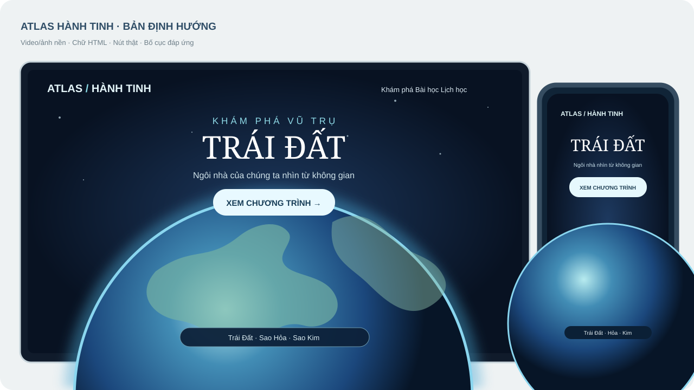
11.1. Người xem cần xem hay cần xoay?
Nếu chỉ cần cảm nhận không khí vũ trụ, một video ngắn và ảnh chờ là đủ cho phần mở đầu. Nếu cần kéo xoay hành tinh để xem mọi góc, phải dùng model 3D như GLB và thư viện Three.js. Hai cách có thể cùng xuất hiện trên một trang, nhưng hãy làm xong phần mở đầu trước.
| Mục tiêu | Dùng gì? | Cách kiểm |
|---|---|---|
| Hành tinh chuyển động điện ảnh sau tiêu đề | MP4 im lặng + ảnh poster | Chữ đọc được ở cả khung sáng và tối |
| Bấm tên để đổi Trái Đất, Sao Hỏa, Sao Kim | Ba bộ video/ảnh + nội dung tương ứng | Hình, tiêu đề và CTA đổi cùng nhau |
| Kéo chuột để xoay hành tinh tự do | GLB + Three.js | Xoay mượt trên máy tính và điện thoại |
Ảnh tham khảo dưới đây cho thấy hành tinh lớn ở chân trang, tiêu đề ở vùng yên và nút chính nằm trên đường nhìn. Ta chỉ học bố cục và thứ bậc thông tin, rồi dùng tên, hình và nội dung riêng cho Atlas Hành Tinh.
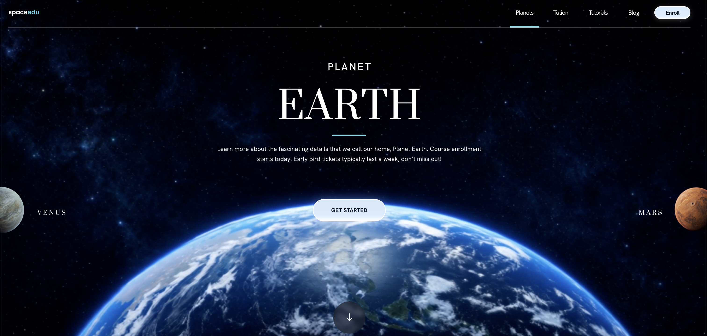
11.2. Chuẩn bị một bộ asset cho mỗi cảnh
Một cảnh gồm video, poster, tiêu đề, mô tả, nút và đích nút. Poster là ảnh tĩnh cùng cảnh, xuất hiện lúc video chưa tải hoặc khi người đọc chọn giảm chuyển động. Chữ và nút đặt bằng HTML để vẫn đọc được trên điện thoại.
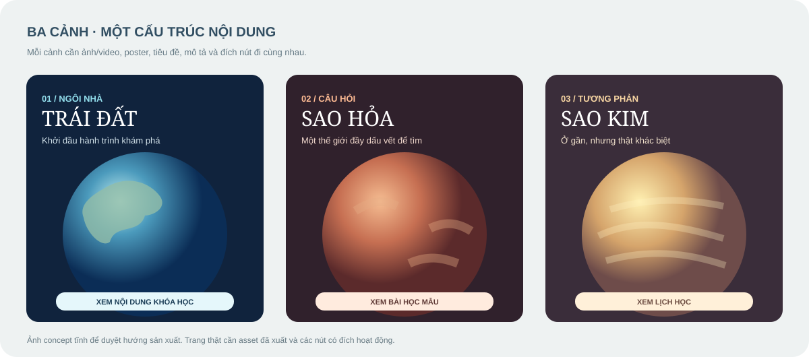
| Cảnh | Video/ảnh cần chuẩn bị | Một câu người xem đọc | Hành động chính |
|---|---|---|---|
| Trái Đất | Bầu khí quyển xanh, hành tinh ở nửa dưới | “Ngôi nhà của chúng ta nhìn từ không gian” | Xem nội dung khóa học |
| Sao Hỏa | Bề mặt đỏ, chuyển động camera chậm | “Một thế giới đặt ra câu hỏi về sự sống” | Xem bài học mẫu |
| Sao Kim | Sắc vàng ấm, mây dày | “Hành tinh gần Trái Đất nhưng rất khác” | Xem lịch học |
Prompt tạo một video nền:
Dựa trên ảnh hành tinh tôi gửi, tạo video ngắn, im lặng để làm nền hero của trang Atlas Hành Tinh. Giữ hành tinh ở nửa dưới khung hình; chừa khoảng tối, ít chi tiết ở giữa phía trên để đặt chữ HTML. Camera di chuyển rất chậm, không thêm chữ, logo, nút hoặc âm thanh. Đầu và cuối gần nhau để lặp mượt. Xuất MP4 và một ảnh poster cùng cảnh.
Cách thử: dừng video ở khung sáng nhất và tối nhất rồi đặt tạm tiêu đề lên. Nếu chữ chìm vào mây hoặc hành tinh bị cắt trên điện thoại, sửa bố cục asset trước khi thêm hiệu ứng.
11.3. Viết mega prompt như một bản giao việc
“Mega” nghĩa là đủ thông tin để agent làm đúng, không có nghĩa phải dài vô hạn. Hãy đưa cho agent tám phần: mục tiêu, asset, nội dung, bố cục, tương tác, chuyển động, thiết bị và cách kiểm. Bắt đầu bằng một cảnh Trái Đất, chỉ mở rộng sau khi hero đạt.
Hãy làm hero cho landing page Atlas Hành Tinh. Người xem là người mới tìm hiểu vũ trụ; hành động chính là xem chương trình học. Tôi gửi
earth.mp4vàearth-poster.jpg. Video chạy im lặng, lặp nhẹ; poster hiện khi video chưa sẵn sàng hoặc người dùng chọn giảm chuyển động. Tiêu đề, mô tả và nút là HTML riêng, không nằm trong video. Đặt chữ ở vùng yên phía trên, hành tinh ở nửa dưới. Trên điện thoại, chữ và nút dễ đọc, hành tinh không bị cắt mất phần chính. Nút “Xem chương trình” đi tới section nội dung thật. Mở bản xem thử, kiểm video, poster, nút và màn hình hẹp trước khi báo hoàn thành.
Khi hero một cảnh chạy tốt, giao thêm bảng ba cảnh ở mục 11.2 và yêu cầu: “Bấm tên cảnh thì video, poster, tiêu đề, mô tả và đích CTA đổi cùng nhau. Thử Trái Đất → Sao Hỏa → Sao Kim → Trái Đất, kể cả lúc video tải chậm.”
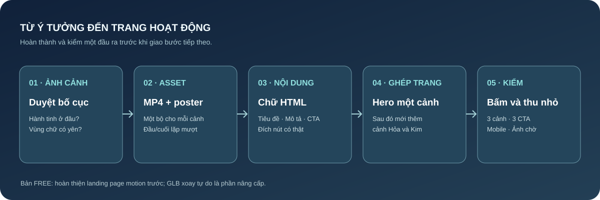
11.4. Kiểm kết quả bằng năm thao tác
- Tải lại trang: poster hiện đúng trước khi video sẵn sàng.
- Bấm đủ ba cảnh: hình, chữ và nút luôn thuộc cùng một hành tinh.
- Bấm CTA của từng cảnh: đích dẫn tới nội dung thật.
- Thu hẹp màn hình: chữ không đè hành tinh, nút dễ chạm.
- Bật chế độ giảm chuyển động: poster và nội dung vẫn dùng được.
Nếu người xem cần xoay hành tinh bằng tay, đó là bài nâng cấp GLB tương tác. Ở bản FREE, mục tiêu là hiểu bộ asset và làm một landing page chuyển cảnh rõ ràng, chạy ổn trên cả máy tính và điện thoại.
Kết thúc bản FREE
Bạn đã theo một dự án game từ ảnh nhân vật tới bản chơi có xương, rồi áp dụng cùng cách giao việc và kiểm kết quả cho một landing page độc lập. Phần nâng cấp dự kiến sẽ đi sâu vào Blender, chuyển động nhân vật, game nhiều màn, lưu tiến độ, bản chơi offline trên điện thoại, game giáo dục và landing page GLB tương tác. Các mục đó đang chuẩn bị nội dung và chưa mở trong bản này.
Phụ lục A — Từ điển đủ dùng cho Vibe Code 3D
Tra từ khi cần; bạn không phải học thuộc trước khi bắt đầu. Ví dụ dưới đây gắn với các bài trong sách.
| Thuật ngữ | Hiểu bằng tiếng thường | Khi bạn cần nhắc đến |
|---|---|---|
| Vibe coding | Diễn đạt mục tiêu, điều kiện và phản hồi bằng ngôn ngữ tự nhiên để agent viết/sửa mã | Giao một mốc dự án cho Codex hoặc Claude |
| Agent lập trình | Trợ lý làm việc với file, có thể chạy và kiểm dự án trong phạm vi quyền được cấp | Muốn tạo trang thật thay vì chỉ xin ý tưởng |
| GPT-6 Astra / Claude Fable 5.1 | Tên model tác giả chọn cho ví dụ; khả năng và nhãn có thể đổi | Chọn model đang được tài khoản hỗ trợ; không xem tên model là bảo đảm chất lượng |
| Codex | Agent lập trình trong hệ sinh thái OpenAI | Nhờ đọc repo, tạo/sửa web 3D, kiểm file |
| Token | Đơn vị AI xử lý khi đọc và sinh nội dung | Cần giữ ngữ cảnh gọn, đưa log/ảnh liên quan |
| Brief | Tờ giao việc nêu mục tiêu, người xem, asset, giới hạn và cách kiểm | Trước khi viết prompt dự án |
| Asset | File dùng trong dự án: ảnh, video, model, âm thanh | Kiểm đầu vào và quyền sử dụng |
| Scene | Không gian chứa các đối tượng 3D | Khi model đã tải nhưng chưa thấy trong cảnh |
| Camera | Góc mắt người xem nhìn vào cảnh | Khi đối tượng bị cắt hoặc quá nhỏ |
| Mesh / geometry | Hình khối 3D và cấu trúc hình dạng | Khi giày, bánh xe hoặc khuôn mặt bị méo |
| Material / texture | Tính chất bề mặt và ảnh vẽ chi tiết lên bề mặt | Khi màu áo hoặc sơn xe không đúng |
| Light | Nguồn sáng trong cảnh | Khi model tối dù file đã tải |
| HDR / environment map | Hình môi trường giúp tạo ánh sáng/phản chiếu xung quanh | Khi vật liệu kim loại trông phẳng hoặc đen |
| Renderer | Bộ phận biến scene và camera thành hình trong trình duyệt | Khi trang có mã nhưng không hiện cảnh |
| Three.js | Thư viện giúp dựng và hiển thị 3D trên web | Khi cần GLB tương tác trong trình duyệt |
| WebGL | Nền tảng đồ họa trình duyệt mà thư viện 3D có thể dùng | Không phải app riêng cần cài cho người mới |
| glTF / GLB | Định dạng gói/trao đổi mô hình 3D; GLB thường là một file | Tải model từ Tripo để đưa vào web |
| Node | Một thành phần có tên/vị trí trong cấu trúc model | Kiểm bánh xe có tách riêng hay không |
| Rig / skeleton | Bộ xương gồm các khớp để xoay tay, chân, thân | Khi muốn Mira gập gối hoặc vung tay |
| Skin weight | Mức độ một vùng bề mặt đi theo từng xương | Khi đầu gối gập mà quần, áo hoặc bốt bị méo |
| Pose | Một tư thế của các khớp tại một thời điểm | Khi kiểm một khoảnh khắc đứng, bước hoặc đánh |
| Animation / clip | Chuỗi pose theo thời gian thành một động tác | Khi muốn phát idle, walk hoặc run từ GLB |
| In-place | Clip bước/chạy tại chỗ, không tự kéo nhân vật đi xa | Khi game đã điều khiển vị trí nhân vật |
| Root motion | Chuyển động toàn thân được ghi ngay trong clip | Khi nhân vật tự trôi dù người chơi đã dừng |
| AnimationMixer | Công cụ trong Three.js phát và chuyển giữa các clip | Khi agent nối clip đứng, đi, chạy vào game |
| Shader | Công thức tính màu/bề mặt khi vẽ | Chỉ cần biết khác texture và ánh sáng ở mức nhập môn |
| FPS | Số khung hình hiển thị mỗi giây | Khi xoay hoặc di chuyển bị giật |
| Repo | Kho file dự án, thường có lịch sử thay đổi | Dùng một mẫu có sẵn và phát triển tiếp |
| Skill | Quy trình/hướng dẫn tái sử dụng cho agent | Brainstorm hoặc kiểm chất lượng theo bước |
| Plugin | Gói khả năng/công cụ bổ sung | Khi cần chức năng chuyên biệt |
| MCP | Cách kết nối agent với công cụ/dữ liệu ngoài | Khi muốn agent gọi Tripo hoặc dịch vụ khác trong phạm vi được phép |
| Poster | Ảnh tĩnh hiển thị khi video chưa phát/không phát | Hero motion phải vẫn đọc và bấm được |
| Fallback | Phương án dự phòng khi thành phần chính không chạy | Dùng poster nếu MP4 không phát |
| Reduced motion | Tùy chọn giảm chuyển động của người dùng | Chọn ảnh tĩnh hoặc ít chuyển động hơn |
| Console | Nơi trình duyệt báo lỗi kỹ thuật | Gửi dòng lỗi liên quan cho agent |
| Preview / localhost | Bản xem thử, thường chỉ chạy trên máy đang làm | Kiểm trước khi chia sẻ công khai |
| Deploy / phát hành | Đưa dự án lên nơi người khác mở bằng link | Kiểm đường dẫn asset và chức năng từ máy khác |
Ngoài phạm vi bản nhập môn: glTFast/Unity WebGL, nền tảng Toy, đo thời gian operator và thao tác Blender chuyên sâu. Chúng liên quan đến quy trình khác, chưa cần để hoàn thành một trang Three.js hoặc landing page motion. Nếu file tác giả gọi là “GLX”, hãy kiểm tên/định dạng thực tế; ví dụ trong sách dùng GLB/glTF.
Phụ lục B — Bộ mẫu thực hành nhanh
Các mẫu này gom những câu lệnh dùng lại nhiều lần. Thay nội dung trong [ngoặc vuông]; bỏ câu nào không đúng dự án. Sau mỗi prompt, hãy mở bản thật và tự thử, không chỉ đọc câu trả lời của agent.
B1. Phiếu brief một trang
Tên dự án: [tên]
Người xem: [ai]
Mục tiêu của người xem: [một hành động]
Asset đã có: [tên file + định dạng + tình trạng đã duyệt]
Bắt buộc: [tối đa ba điều]
Để sau: [tối đa ba điều]
Thiết bị cần thử: [desktop/điện thoại]
Đạt khi: [ba việc quan sát hoặc thao tác được]
B2. Tạo dự án nhỏ
Tôi mới bắt đầu và có brief này:
[dán brief]. Hãy chọn bản đơn giản nhất có thể chạy trong trình duyệt. Trước khi sửa file, chia thành tối đa năm mốc và nói rõ tôi phải nhìn thấy gì sau mỗi mốc. Chỉ làm mốc đầu sau khi tôi duyệt. Nếu thiếu asset, nêu điều thiếu; đừng dùng ảnh giả rồi nói là đã hoàn thành.
Thử: mốc đầu mở được; thông điệp và thao tác chính nhìn thấy. Lỗi: gửi ảnh hoặc log theo B4.
B3. Kiểm GLB trước khi lập trình
Hãy đọc
[file].glbvà báo: kích thước, mesh/node, vật liệu/texture, skin/rig và clip animation. Với yêu cầu[xe chạy/bánh quay/nhân vật đi], phân biệt phần làm được ngay với phần cần sửa/xuất lại asset. Chưa thay mô hình hoặc viết hiệu ứng cho đến khi báo cáo xong.
Thử: báo cáo có tên node/clip hoặc ghi rõ không có. Lỗi: nếu kết luận quá chung, yêu cầu bằng chứng từ cấu trúc file.
B4. Báo một lỗi cụ thể
Mong muốn:
[điều cần thấy]. Thực tế:[điều đã thấy]. Cách tái hiện:[các bước]. Bằng chứng:[ảnh/log/video]. Thay đổi gần nhất:[việc vừa làm]. Hãy tìm nguyên nhân theo dữ kiện, sửa nhỏ nhất có thể, giữ[phần đã đúng], chạy lại các bước trên và báo kết quả.
Thử: lặp đúng các bước tái hiện; kiểm thêm phần đã đúng. Lỗi: nếu ba lần chưa tiến bộ, dừng sửa và xem lại giả định/asset.
B5. Hero video một cảnh
Xây hero cho
[chủ đề]vớihero.mp4làm video nền im lặng vàposter.jpglàm ảnh chờ. Tiêu đề[text], mô tả[text], CTA[nhãn + đích thật]là HTML. Giữ chữ đọc được suốt video, điện thoại không cắt mất chủ thể, người chọn giảm chuyển động xem poster tĩnh. Chỉ làm hero trước; mở preview và thử video, poster, CTA, desktop và màn hẹp.
Thử: tải lại, tắt video, bấm CTA, thử màn hẹp. Lỗi: ghi giây cụ thể khiến chữ chìm hoặc vùng bị cắt.
B6. Kiểm trước khi chia sẻ
Hãy kiểm bản dự án hiện tại trên desktop và điện thoại: nội dung, asset tải được, thao tác chính, CTA, tốc độ cảm nhận, fallback và thông tin nhạy cảm. Lập bảng đã đạt/chưa đạt/chưa thể kiểm. Chỉ sửa lỗi chặn người dùng hoàn thành hành động chính. Sau đó cho tôi biết link nào người khác có thể mở được; đừng gọi localhost là link công khai.
Thử: mở link từ thiết bị/trình duyệt khác. Lỗi: nếu file lỗi chỉ ở bản chia sẻ, kiểm đường dẫn asset và cấu hình phát hành.
B7. Checklist bốn ảnh cho Tripo
- [ ] Cùng một đối tượng, cùng màu và phụ kiện ở trước/sau/trái/phải.
- [ ] Mỗi ảnh một góc rõ, toàn thân/toàn xe, nền sạch.
- [ ] Không có chữ, tay/chân/bánh bị cắt hoặc chi tiết che khuất lớn.
- [ ] Đặt bốn ảnh cạnh nhau và đánh dấu chi tiết không nhất quán.
- [ ] Duyệt preview nhiều góc trước khi xuất GLB; kiểm rig/clip riêng.
B8. Nâng Mira từ di chuyển cả khối sang chạy có khớp
Đây là repo Mira và GLB mới sau khi Auto Rig. Hãy liệt kê skeleton, skin và tên các clip có thật. Giữ bản GLB cũ làm dự phòng. Nếu GLB có clip phù hợp, thử phát động tác đứng, chạy và đánh; nếu không có clip, dùng bộ xương để dựng bản thử chuyển động như repo Mira hiện tại và ghi rõ cách làm. Kiểm khi bắt đầu chạy, đổi hướng và dừng: chân không trượt, bốt không xuyên nền, áo và túi không kéo méo. Mở localhost, cho tôi xem ba trạng thái ở cùng góc camera. Chưa sửa quái và bối cảnh.
Thử: đứng → chạy → dừng → chém. Lỗi: nếu không có clip, phải nói rõ chuyển động được tạo bằng mã trên bộ xương; đừng gọi chuyển động cả khối là chạy có khớp.
B9. Nâng một loại quái
Trong game Mira, hãy xem ảnh concept quái tôi gửi và chọn một loại quái hiện tại để nâng cấp hình ảnh. Giữ nguyên máu, tốc độ, thời điểm xuất hiện và kiểu tấn công. Đề xuất giữ hình khối Three.js hay tạo GLB riêng, giải thích lựa chọn bằng việc quái có đọc rõ ở góc camera đang chơi không. Làm một bản thử và mở localhost để tôi so trước/sau.
Thử: nhận ra quái khi nó còn ở xa và khi nhiều con cùng xuất hiện. Lỗi: nếu model đẹp nhưng khó thấy, chỉnh hình/màu trước khi tăng chi tiết.
B10. Đồng bộ một chiêu phép
Hãy kiểm riêng chiêu Tia Linh Quang của Mira theo ba lớp: luật trúng đích, tư thế nhân vật và hiệu ứng hình/âm. Giữ nguyên sát thương và thời gian hồi. Khi bấm, tư thế và tia sáng phải xuất hiện đúng lúc; quái mất máu khi tia chạm. Hiệu ứng không được che vòng cảnh báo nguy hiểm. Thử với quái đứng gần và quái đang di chuyển; báo điều đã kiểm.
Thử: quan sát lúc bấm, tia chạm, thanh máu quái và lúc chiêu sẵn sàng lại. Lỗi: nếu ảnh và luật lệch thời điểm, sửa đồng bộ trước khi thêm hạt hoặc ánh sáng.
B11. Bài tập mới — Làng Vui Học 3D
Làng Vui Học 3D là ý tưởng game giáo dục: trẻ đi cùng nhân vật Bông qua một ngôi làng nhỏ, trò chuyện với người dân và giải nhiệm vụ ngắn để mở tiếp câu chuyện. Ví dụ, một quầy hàng có thể nhờ đếm đúng số quả; thư viện có thể nhờ ghép từ; bến xe có thể cho chọn biển chỉ đường. Mỗi nhiệm vụ cần gắn với một mục tiêu học tập rõ, có phản hồi khi chọn đúng hoặc sai, và cho phép thử lại. Hình 3D làm việc khám phá thú vị hơn; bài học vẫn phải dễ hiểu nếu tắt hiệu ứng.
Phạm vi demo này: chỉ hoàn thiện Bông, nhân vật nữ đầu tiên, từ ảnh tham chiếu đến model có xương và hoạt ảnh. Nhân vật nam và màn chơi giáo dục là hướng mở rộng, chưa được minh họa bằng kết quả chơi thật trong bài này. Làm một nhân vật trước giúp kiểm quy trình, phong cách và chuyển động trước khi nhân đôi khối lượng công việc.
B11.1. Tạo và duyệt bốn góc của Bông
Câu lệnh gốc để tạo ảnh mặt trước trong ChatGPT hoặc Claude (giữ nguyên để bạn sao chép):
Create an image
Front view of "Bong", a cute 7-year-old Vietnamese girl, warm light-tan skin, big round dark-brown eyes, rosy chubby cheeks, short black hair with straight bangs and two small neat buns on top (no long hanging hair), Vietnamese primary school uniform: white short-sleeve shirt, small red scarf tied in a short tight knot at the neck, navy blue knee-length shorts, simple brown strap sandals.
Style: cute stylized 3D animated-film character, soft clay-like materials, smooth simple shapes, chibi proportions (head about 1/3 of body height), clean solid colors, no patterns, no text or logos.
Pose: neutral A-pose, arms straight and angled 45° down away from the body, open relaxed hands with fingers slightly apart, standing straight, feet parallel and hip-width apart (NOT wide stance), small visible gap between the legs, mouth closed with a gentle smile, looking straight ahead.
Camera: orthographic character turnaround view, camera at chest height, full body from head to toes, character centered, same scale as reference.
Background: plain pure white, soft even studio lighting, no floor shadow, no props, nothing held in hands.
Khi ảnh trước đạt, đính kèm chính ảnh đó và yêu cầu từng góc còn lại. Dùng câu lệnh sau ba lần, lần lượt thay [BACK / LEFT PROFILE / RIGHT PROFILE]; mỗi lần chỉ tạo một ảnh riêng, không ghép thành poster:
Use the approved front-view image of Bong as the exact character reference. Create one full-body [BACK / LEFT PROFILE / RIGHT PROFILE] orthographic turnaround image of the SAME girl. Preserve her age, proportions, two small hair buns, white short-sleeve shirt, short red scarf, navy knee-length shorts and brown strap sandals. Keep a neutral A-pose, feet parallel, identical camera height and character scale, pure white background and even studio lighting. Show the entire body from hair to sandals. No new accessories, text, collage or perspective angle.
| Trước | Sau | Trái | Phải |
|---|---|---|---|
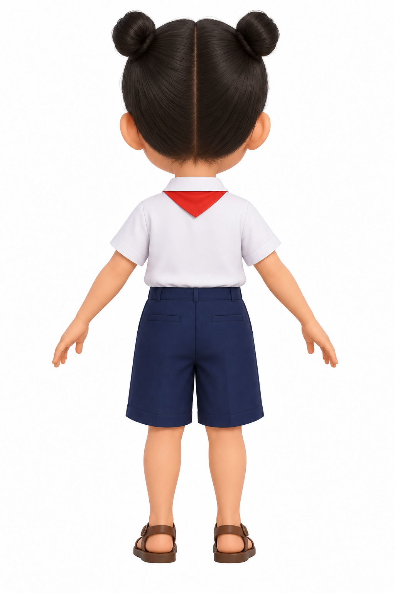 |
Hình B11.1 — Bốn ảnh tham chiếu thật của Bông do tác giả cung cấp. So tóc búi, khăn quàng đỏ, chiều dài quần và quai dép ở cả bốn góc trước khi dựng 3D.
Bạn được đổi ảnh. Nếu một góc làm tóc, trang phục hoặc tỉ lệ thay đổi, hãy tạo lại góc sai với ảnh mặt trước đã duyệt làm chuẩn. Chỉ nạp vào Tripo khi bốn ảnh mô tả cùng một nhân vật; ảnh đẹp đơn lẻ chưa đủ.
B11.2. Từ ảnh sang model trong Tripo
- Trong Tripo, chọn tạo model từ nhiều góc ảnh (multi-view). Nạp đúng ảnh trước, sau, trái và phải vào từng vị trí; kiểm lại nhãn trước khi bấm tạo.
- Xoay preview để xem hai bên mặt, búi tóc, khăn quàng, bàn tay và hai chiếc dép. Nếu chi tiết bị dính hoặc mất, sửa ảnh tham chiếu rồi thử lại; đừng vội chuyển sang rig.
- Nếu Tripo yêu cầu Retopo trước khi rig, xem preview lưới mới. Với nhân vật cần gập tay, chân, ưu tiên lưới phù hợp chuyển động và so ngoại hình trước/sau. Không có một số mặt cố định đúng cho mọi model.
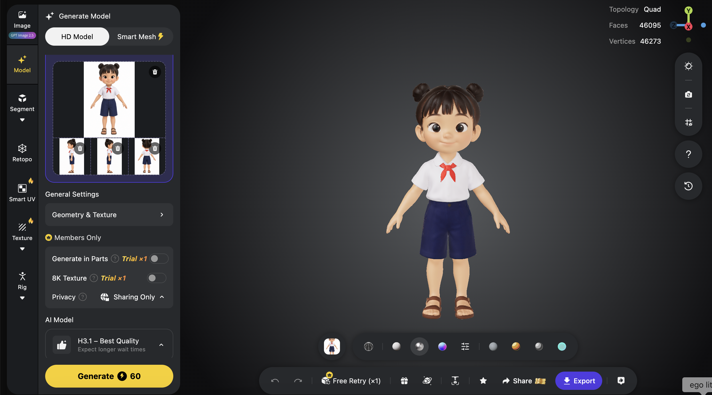
B11.3. Gắn xương, thử động tác, rồi kiểm file tải về
- Vào Rig, chọn Humanoid vì Bông có cấu trúc người. Kiểm xương hông, vai, khuỷu tay, gối và cổ chân ở đúng vị trí. Chỉ bấm làm lại khi thấy lỗi cụ thể ở khớp hoặc vùng da bị kéo méo.
- Vào Animate và thử từng động tác ngắn: idle (đứng), walk (đi), run (chạy), jump (nhảy), wave (vẫy tay), cheer (vui mừng). Với game giáo dục, động tác cần thân thiện, đọc rõ ở camera game, không cần thật nhiều chiêu phức tạp.
- Export GLB, tải file về và lưu cùng bốn ảnh nguồn trong một thư mục dự án. Đặt tên dễ hiểu, ví dụ
bong-rigged.glbvàbong-animations.glb. Sau khi tải, nhờ agent kiểm skin, số xương, tên và số clip thật trong từng GLB trước khi đưa vào game.
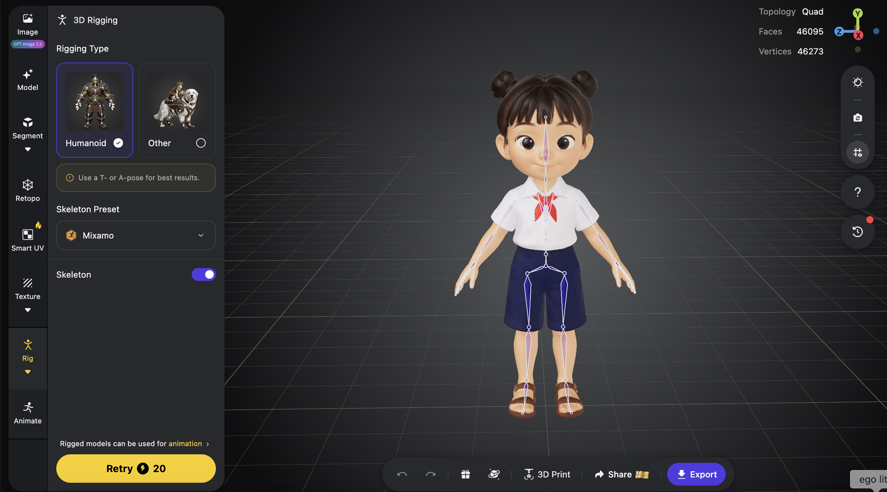
Kết quả đã kiểm từ bộ file mẫu: bong_animations.glb có một skin, 65 khớp xương và 7 clip, gồm đứng, đi, chạy, nhảy, vẫy tay, vui mừng và nhảy dây. Ngược lại, các file riêng được đặt tên girl_idle.glb hoặc girl_walk.glb trong thư mục mẫu có xương nhưng không có clip. Tên file không chứng minh nội dung bên trong. Bạn có thể nhận kết quả khác khi xuất từ Tripo; hãy luôn kiểm file của chính mình.
Prompt giao file cho agent:
Tôi gửi bốn ảnh tham chiếu của Bông và các file GLB đã tải từ Tripo. Trước khi làm game, hãy lập bảng cho từng file: có mesh, texture, skin, bao nhiêu xương, bao nhiêu clip, tên từng clip và thời lượng. Chỉ dùng file thực sự có clip để thử đứng, đi, chạy và vẫy tay trong một cảnh nhỏ. Giữ đúng ngoại hình Bông; mở bản xem thử từ trước, bên và góc camera game. Nếu thiếu clip, báo rõ và dừng ở bước kiểm asset, không tự gọi file là đã animate.
Bài tập ứng dụng giáo dục đầu tiên: cho Bông đi từ cổng làng đến quầy hàng, chọn đúng ba quả trong một nhóm năm quả. Khi đúng, Bông vẫy tay và người chơi được đi tiếp; khi sai, trò chơi gợi ý đếm lại, không trừ điểm ngay. Đây là brief cho bước phát triển tiếp, chưa phải tính năng được chứng minh bằng các ảnh Tripo bên trên.
Prompt cho màn chơi mẫu:
Dựa trên file Bông đã kiểm, tạo một màn web 3D rất nhỏ tên “Làng Vui Học 3D”. Chỉ có đường từ cổng làng đến quầy hàng, Bông đi bằng bàn phím hoặc nút chạm, và một nhiệm vụ đếm ba quả trong nhóm năm quả. Khi chọn đúng, phát động tác vui mừng nếu file có clip; khi sai, hiện gợi ý đếm lại. Chưa thêm đăng nhập, điểm thưởng hay màn thứ hai. Mở localhost và thử toàn bộ từ bắt đầu đến hoàn thành trên desktop và màn hình điện thoại.
Đạt khi: người mới có thể đối chiếu bốn ảnh, nhận ra model Tripo, chỉ đúng bộ xương, đọc được báo cáo clip thật và tự chơi hết nhiệm vụ đếm mẫu sau khi phát triển. Nếu chưa có màn chơi, kết quả hiện tại dừng ở asset nhân vật.